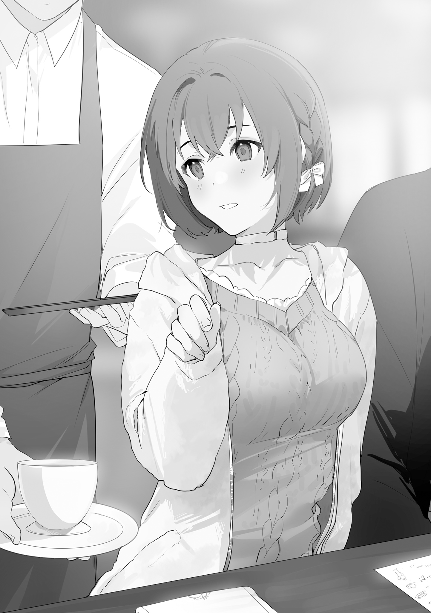
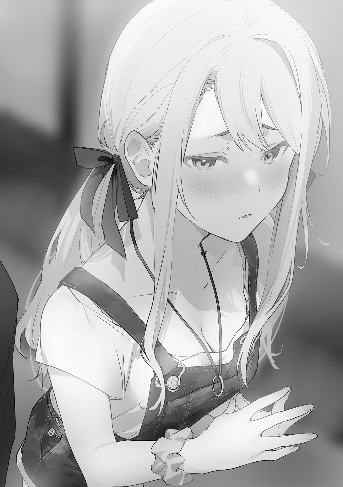
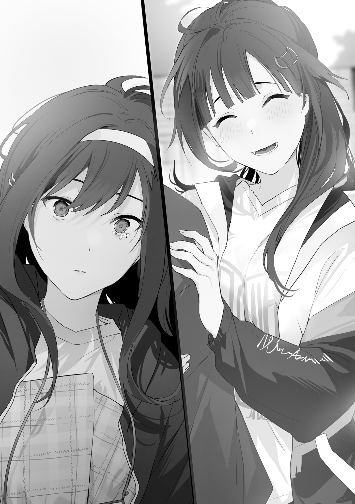
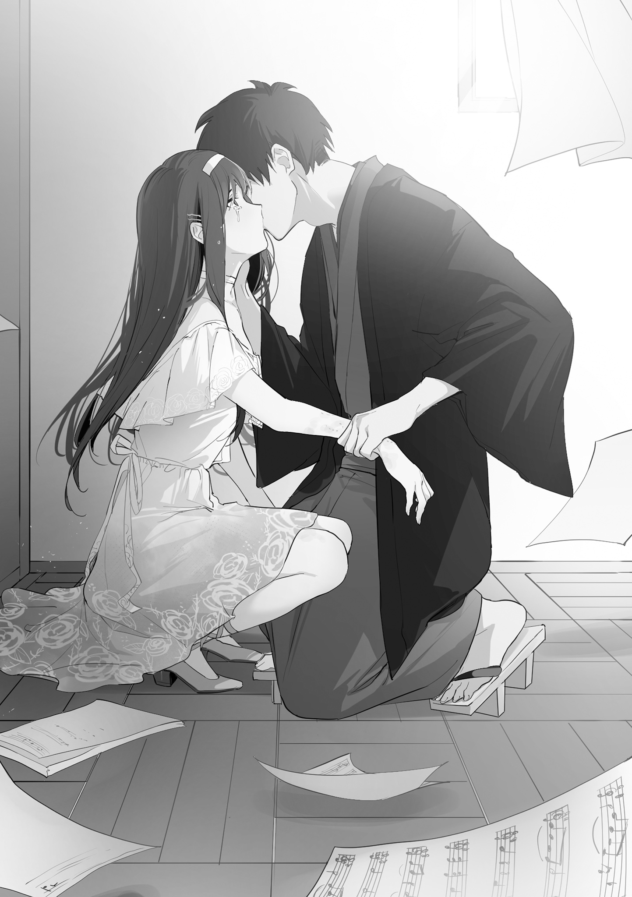
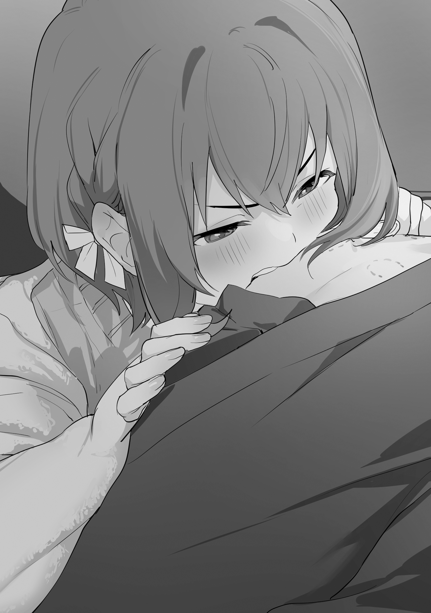
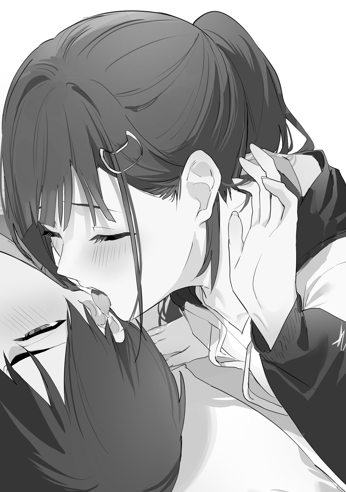
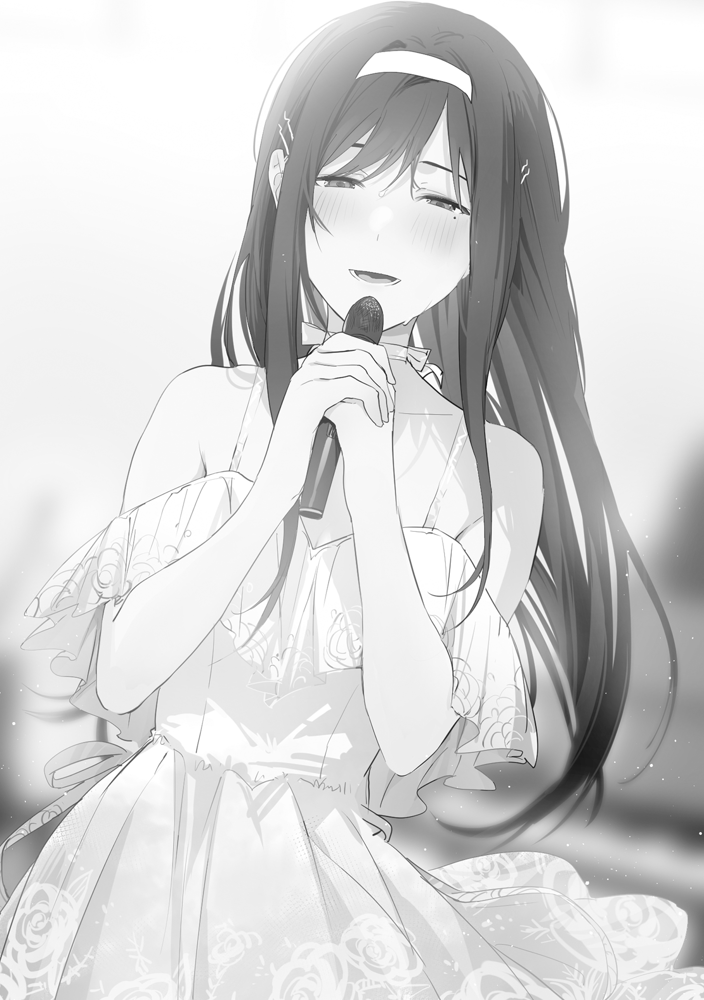

本電子書籍を示すサムネイルなどのイメージ画像は、再ダウンロード時に予告なく変更される場合があります。
本電子書籍は縦書きでレイアウトされています。
また、ご覧になるリーディングシステムにより、表示の差が認められることがあります。
第９話 平気だよ
「調子はどうだい？」
「動物園巡りも楽しかった」
俺と
先週、そのアパートの三回生の住人に、研究の手伝いをしてほしいと頼まれた。だから俺は彼と一緒に各地の動物園におもむき、猿やゴリラの観察をした。群れのなかのボスの行動とか、各個体の役割を記録したのだ。
「動物園を渡り歩きながら、いろいろな話をきいた。名古屋の動物園にいるゴリラはイケメンだとか、動物園のゴリラは近親になりすぎて交配が難しくなってきているとか。とても面白かったよ」
俺と
三人で駅に向かって歩いていた。
そして俺はいつものごとく着流しだが、ふたりはお出かけ用のオシャレな服装をしていた。
「動物園、私もいきたかったです」
「ついていってもよかったんじゃない？」
「猿の観察は、人手が多いほどいいという話だし」
「そう思って、
俺はいう。
「でも、研究の手伝いだときくと、『難しそうなことはお任せします！』といって逃げてしまったんだ」
「はて？ なんのことですか？」
「ふさふさの毛玉ちゃんたちはさぞかわいかったことでしょう」
どうやら都合のわるいことはきこえないらしい。
猿の観察はとても簡単だった。どの猿がどの猿にエサを分け与えてるとか、毛づくろいをしている回数を数えて記録する作業がほとんどだった。
「
「そのとおり。他人の喜びを己の喜びとする。その大切さを俺も少しずつわかりはじめている」
ドイツの哲学者、かのエーリッヒ・フロムは『愛するということ』という著書のなかで、愛の本質について語った。
自分はこれだけ魅力的です、価値があるんです、だから愛してください。そのような態度は愛ではないとエーリッヒは断じた。それは物を売る行為に他ならない。
そして愛は与えることであると主張した。
この与えるというのは、見返りを求めて与えるのではない。あなたが困っているところを助けたので私を好きになってください、というのは愛ではない。もちろん、与えることが美徳だからとか義務感やかっこつけから与えるのも愛ではない。
与えることで他者が喜んでくれる。それ自体に喜びを感じる。
それが愛なのだと。
エーリッヒの主張する愛の本質は、愛されるという受動的なことではなく、愛するという能動的なことだった。
そして愛するというのは運命的な相手に対して思わずそうしてしまうというようなものではなく、日々の不断の努力によって手に入れるものであるとエーリッヒは著書のなかで語っていた。
「
「エーリッヒの考え方のいいところは」
俺はいう。
「己の努力で全ての人を愛することができ、誰しもが真実の愛にたどりつけるとしているところだ」
エーリッヒのいっていることはきっと正しいのだろう。
俺は与える人になろうと活動するうちに、誰かが喜んでいる顔をみるだけで、それだけで自分も幸せを感じるようになってきていた。
だからカレー作りにとりつかれたヤマメ荘の住人が珍しいスパイスを求めているときけば、西は
「私は好きです」
「
「エーリッヒな」
「しおりちゃんは小難しくてめんどくさいっていいますけど」
俺の話を真面目にきいてくれるのは
「そういえば大学祭の実行委員が、人が足りないっていってたけど──」
「ああ。もちろん、手をあげた」
俺たちの大学では十一月に大学祭がおこなわれる。高校でいうところの文化祭だ。ただ、大学祭になるとかなり規模が大きい。人気のある漫才師や、バンドがくる大学も多い。
毎年、俺たちの大学では、実行委員主催で本学の生徒がパフォーマンスをするステージが最終日にある。今年は和太鼓なのだが、なかなか人が集まらず、実行委員が困っていたのだ。
「
「忙しくなるね。
「たしかに会える時間が減るのは寂しいですけど私も部活がありますし」
それに、と
「私は誰かのためにがんばる
そういって、いつもの流れで俺と手をつなごうとして、
「遠慮せずつないでよ」
「
俺たちは落ち葉が舞い落ちるような、ゆっくりとしたスピードで歩いた。通りにあるお弁当屋さんの新メニューにはしゃいだり、陶器店の軒先にならんだお皿の柄をみてみたり。
やがて駅についた。
出口のところで、なんともなしに立つ。天気がよくて、駅前はのんびりした空気だった。
「
「がんばりましょうね」
俺は、「ああ」とうなずく。
しばらくしたところで、秋っぽい色合いの、やわらかそうな服に身を包んだ女の子が駅の出口からでてくる。
京都という場所に彼女がいる光景はなんだか不思議な感じがした。とても
でも、それらは俺の感じかたの問題で、彼女はたしかにいるのだ。
「久しぶりだね」
その女の子は俺たち三人に向かって手をあげる。
どこか困ったような笑顔。海辺で出会ったときとかわらない空気。
俺は今日、そのアシストをする。
そういうことに、なっている。
◇
まずは四人でお昼を食べようということになり、お店に向かって歩いているときのことだ。
「い、いきますよ」
「
「ベイビー、俺もだよ。なにがあっても守るからな」
俺はそんなことをいいながら、
ちらりと後ろをみれば、
「うん」
「私も彼氏欲しくなってきた」
よしっ、と
夏、海辺の街で俺たちは
日取りが決まったところで、俺たちはヤマメ荘に住む院生、
議題は当然、どうやって
一計を案じたのは、日々、宇宙の研究に余念のない
『となりの芝生イチャイチャ宇宙作戦だ』
『当日、
それが
『完璧な作戦ですね……』
『天才としか思えんばい……』
『やっぱり学問を究めようという人はちがう……』
『いや、厳しいんじゃないかなあ』
俺の意見は無視された。
こうして当日を迎え、
「人前でこういうことをするのは恥ずかしいですが……うまくいってますね！」
「そうか？」
「この調子でいきましょう！」
「いけるのかな～」
実際そのとおりで、お昼を食べる予定の中華料理店に入る直前、小声で
「私、
「もしかしてバレてる？」
「そりゃそうだよ。私だって、もうそういうことわかるもん。
最初からわかったうえで、
「
つまり、
「だから
俺たちが入った中華料理店は大学生がよくくる、いわゆる街中華と呼ばれるリーズナブルな店だった。
「
「うん。
「すごくいいと思う。私、こういうお店に入ってみたかったんだ」
そういいながら
テーブルに座り、食事をしながら会話をする。
「
いったあとで、
「やさしいといえば、やっぱり彼氏にするならそういう人がいいですよね～」
おいおいそれは強引すぎだろって感じだが、
「そうだね～やさしい人がいいね～」
お茶を飲みながらうなずく
「
「いてくれたらよかったのに、って思うことは多いよ」
「か、彼氏はいいですよ！」
そういいながら、
「一緒にいて楽しいですし、なんだか心があったかくなりますし、好きって気持ちが通じあって……」
「
「自分で料理とかするのめんどくさいって思ってたんですけど、
そこで
「
「
「やっぱり一番
「ああ」
「今まで食べた手料理のなかで？」
「あ、うん……」
「今までっていうのは、高校生のときも含んでいるんだけど、それでも？」
「え？ それはえっと……」
「ふうん、あ、料理きたね。私が取り分けるよ」
「はい、
「あ、ありがとう」
俺はくちびるを腫らしながら食べる。そのとなりで、
「今はまだ秋になったばかりですが、冬になればクリスマスですね～」
そう。クリスマスまでには彼氏をつくっておきたいという世間でよくいわれる心理を
「
「私は初めて恋人と一緒にクリスマスを過ごします。きっと、人生で一番素敵なクリスマスになると思います！ ね、
「ああ、とても素敵なクリスマスになると思う」
そこで
「
「人生っていうのはさ、当然高校時代も含まれるわけだけど？」
「えっと、まあ、うん……」
「ふうん。あ、また料理きたね。チンジャオロース
そういって、また小皿に取り分けてくれる。俺の前に置かれた小皿にはピーマンがひと欠けらあるだけだった。
「
「好きな人と一緒にいるってのはそういうことだよね」
「はい。
「一番かあ」
そこで
「
「いや……」
さっきから俺を追い込もうとしてない？ 自分から迎えにいってない？
いずれにせよ俺は
「
言葉の途中で、俺は
「ごめんごめん」
「足、あたっちゃった。大丈夫？」
「ああ……大丈夫……だ！」
俺がデザートのゴマ団子を食べることはなかった。
「
その様子をみて
「
◇
夕方、ヤマメ荘に向かって歩いていた。
『明日の授業の準備があるから』
「
作戦が成功したかはわからない。けれど、
中華料理店で食事をしたあと、俺たちはいろいろなスポーツが手軽にできるアミューズメント施設にいって、バスケットコートで二対二をして遊んだ。当然、チーム分けは俺と
俺が
そのとき、
『背中、押そうか？』
そして
「
「なんのことだろうか」
「体かたすぎです！」
俺のストレッチ事情はともかく、試合も盛りあがった。着流しの俺が足を引っ張りまくっても、
「なにも意識していなかった幼いころをのぞけば──」
夕暮れに染まった帰り道、
「僕は初めて女の子にさわったかもしれない」
彼は男ばかりの農業高校で女の子と無縁の生活を送ってきた。大学に入っても住んでる場所はヤマメ荘、
「
「好きな人とふれあうっていうのはとても素敵なことだ。よくわかったよ」
でも、と
「
どこまでも控えめな
「大丈夫ですよ」
「
「俺もそう思う」
「
それから俺たちはいつも魚を焼いている私道まで帰ってくる。
「
となり同士の、それぞれの部屋に入ろうとしたところで
「僕のためにいろいろしてくれて」
「
「それでも、ありがとう。
こういうことを素直にいえてしまうところが、
「じゃあ」
俺は自分の部屋に戻り、豆を
二時間かけて本を読み切ると、窓の外はもう真っ暗になっていた。時計をみて、ヤマメ荘の外にでる。
夜のバスには独特の空気がある。どことなく物悲しく、孤独で、でもそれを許してくれるような雰囲気。窓の外を京都の夜の風景が流れていく。人々は家に帰り、旅人は観光を終える。
終点の京都駅でバスを降りる。
駅ビルの階段の前で、その女の子は俺を待っていた。
「遅刻じゃない？」
「バスは時間が読みにくいんだ」
「じゃあ、話そっか」
「
◇
「ここ、ちょっと狭いね」
「混んでるから仕方ないな」
店が狭いこともあり席と席の間隔をあけられず、俺と
右半身で、
足もしっかりあたっていて、俺は思わず
「……ま、いっか。
そして、そのまま話しはじめる。
「私が京都にきたのは純粋に
そこで
「なのに
「足のすねがなんだか痛むんだけど」
「あんなの遊びだよ。
たしかに
そこで店員さんがコーヒーを運んでくる。カウンターに置きやすいように
店員さんがいったあとで、
「
「い、いや……」
「
「それ、どうこたえるのが正解なんだ～？」
「
「そういうことにはなるが……」
「
「よくないと思うなあ！」
「冗談はさておき、さっきいったとおり、私が京都にきたのは
そしてもうひとつは、と
「

「
「ああ。
「驚きだよね。京都じゃなくて、東京の芸大生だったなんて」
しかし、それはちがっていた。
ちなみに
「ヤマメ荘の向かいにきたのは偶然っぽいね」
でも、と
「大阪じゃなくて京都を拠点にしたのは
「ああ」
『好きな人に会いにきた。私、謝らなくちゃいけない』
そして、会いにきたのは俺だけじゃなかった。
『京都から少し遠いところに、私が傷つけた人もいる。会って、謝りたい』
それはきっと
ただ、
『ふたりに会うのが、少しこわい』
「私、
窓からみえる夜景を眺めながら、
「
でも、と
「深く傷つくと思う。だって、あの子、純粋なんだもん。私たちみたいに、新しい恋をしようとか、そんなこと考えたこともないと思う。あのころの好きって気持ちを、子供がビー玉を宝物みたいに扱うように大切に持ちつづけて、それが自分だけだって気づいて、ひどくショックを受けると思う」
そのとき、声を失った
「だからね、
それが、
「これからちょくちょく京都にくるね。
そこで
「平気だから」
俺と
「だって、もう
「そうだな」
「
中華料理店の、テーブルの下でのキック。たしかにあれは
でも俺たちは、言葉や態度にあらわすべきじゃないものや、自分のなかに湧きあがった感情を無視しなければいけない瞬間があることを知っている。
だから俺はバスケットコートで
「平気だよ」
第10話 ダメな女の子
「
授業が終わったあと、俺は大学祭のステージのために構内の練習場に集まり、有志のみんなと一緒に和太鼓の練習をした。そして実行委員が当日の衣装である
「お祭り女だなあ」
「
そんなやりとりをして、とりあえず飲みにいきましょうかという流れになり、大学近くの沖縄料理の居酒屋に入って会話をしているのだった。
「つまり
「
「う～ん」
「高校のときなら、『
うんうんと
「
そういってスマホの画面をみせてくる。映しだされているのは
同じ芸大の映像科が主催する上映会に参加したときの風景とか、謎のオブジェとか、思い立って学友たちと海にいったときの画像なんかがあげられている。
「芸大生って感じだな～」
音楽科の仲間と思われる五人くらいと
「
高校のころはどちらかというと孤高の女の子だった。でも今は友だちがいて、楽しそうな大学生活を送っている。
「
最初の書き込みはこれだ。
『リビングで死んだふりをしていたら、お母さんがゲームを買ってくれた。ポテチを食べ、コーラを飲みながら朝まで遊んだ。妹に怒られた』
そこからは
アップされる画像はゲームの画面ばかりだった。プレイヤーの腕前のランクがどんどん上がっていく。でも、ひと月ほどしたところで、ちょっとだけ状況が変わる。
『試験を受ければ高校を卒業したのと同じになって、大学にいけるらしい。お母さんがとぼけたふりして資料を机の上に置いていった。ニートを楽しんでいるのがバレてしまったようだ』
そこから、勉強しようとする書き込みがつづく。
『妹が参考書をいっぱい買ってきた。家族で私を包囲する気だ』
『今日はがんばって一時間も勉強した。ゲームは七時間した』
『天才だ。とても難しい問題を解いた。私の時代がきている』
『どうやら昨日解いた問題は高校一年レベルらしい。習った記憶がない』
『料理と掃除をがんばった。家事ができれば将来、妹が養ってくれるかもしれない。それをいうと、妹は本気でおびえていた』
『ピアノを弾く動画配信なんかはどうだろうか。コスプレをして、胸を強調しながら弾いている人の再生数がすごいことになっている』
『やっぱりピアノ配信はやめておこう……私の胸はとても大きいけれど、世間の人たちはみる目がないから、再生数が伸びないかもしれない』
そんなコミカルな書き込みがつづくが、ある時点で流れが変わる。
『このままじゃダメだ。やっぱりちゃんと大学で音楽を学びたい』
『私は人を傷つけた』
『大学にいって、ちゃんとした女の子になる。それで、会いにいく。会ってどうなるかはわからないけど、傷つけた人たちに謝りたい』
そこから
そして感性を磨き、仲間をつくり、関西で活動拠点を持つまでになったのだ。
「どんな音楽活動をしているかはＳＮＳではわかりません。みつけられなかったので、きっと本名の活動ではないんでしょう」
いずれにせよ、と
「言葉を失っているときいたときは驚きましたが、それなりに楽しくやっているようです」
「ニート生活も満喫したみたいだしな」
「
でも、と
「
このままいけば、俺は
「そんな
「ああ。それで、きっとうまくいくんだろう。
「もう
「俺たちは大人になったんだ」
「少し寂しい気もしますが、そのほうが絶対いい──」
そこで
「どうした？」
「いってるそばから
「いたー！ 大人になってないダメ女いたー！」
指さしたのは同じ居酒屋のなかのテーブル席。
みれば、色素の薄い美人な女の子が男に囲まれ、大量のお酒を飲まされている。金髪に青い瞳、整った顔つきとは裏腹に、かわいらしい雰囲気のある表情。
◇
夏にみんなで海にいった。
「私もちゃんと人とつながれるようにならないといけないしさ」
でも、
今回だってそうなる可能性は高い。
「なんとかする。でないと前と同じ繰り返しだし」
それに恋愛対象としてみられてもいい、と
「彼氏つくらなきゃだもん。
あの夏、
「
そんな感じで新しい自分になるべく、
その
「合コンの二次会って感じですね」
「
オシャレで今風な男が三人、
「さっきお手洗いにいったとき、あのテーブルの男たちがしゃべってた」
「なんかいってました？」
「あんな美人なかなかいない、絶対持って帰るぞ、めちゃくちゃにしてやろうぜ、って」
うわあ、見た目は好青年風なのに、とドン引きする
「
「いや、もう少しだけ様子をみよう。自分でなんとかするかもしれないし」
「もしかして、こういうことって何度もあります？」
「まあ、これで四、五回目ってとこ」
「自分でなんとかできるようにならないとな。俺がいつまでもそばにいれるわけでもないし」
「ですね」
ということで、
「今から俺の家こない？ ゆっくりソファーに座って飲もうよ」
男のひとりがいう。でも
「いかないよ～」
「なんで？」
「簡単に男の人の部屋にいっちゃいけない、って友だちにいわれてるんだあ」
事前に
いいぞ
「そっかあ。俺の飼ってる犬、めっちゃかわいいから
「犬？ みたい！ 部屋いく！」
おい、チョロすぎるだろ、と俺は思う。
しかし──。
「ううん、ダメ。やっぱいかない」
「
いいぞ、がんばれ。そのまましっかりした女の子になるための第一歩を踏みだすんだ、と心の中でエールを送る。だけど──。
「
「そういう飲みかたよくないんだよ～」
「でも、
「そだよ～」
「これ、友だちになるための一番いい方法なんだよ？」
「え、そうなの？」
「みんな飲み比べをして友だちになってるんだよ？ 知らないの？」
「そうだったんだ……私だけ知らなかったんだ……じゃ、じゃあ私もする！」
おい～!! そんなわけないだろ！ という俺の心の叫びが届くはずもなく、飲み比べがはじまってしまう。
「俺、けっこう酔ってきちゃったよ～」
「負けちゃいそ～」
しらじらしくそんなことをいう男たち。しかしポンコツ
ほどなくして、
「友だち～ちゃんとつくる～」
そんなことをいいながら、頭をゆらしている。
今日は気温が高かったから、
酔ってなにもわからなくなった
「えっろ」
「一度ヤったらなんでもいうことききそうだよなあ」
「この顔たまんね～」
男たちが生唾を飲み込む音がきこえてきそうだった。
「
「いつもどおりの平常運転だな！」
◇
「きっりしま！ きっりしま！」
「なんか、距離感おかしくないですか？」
「なんで？ 私と
「ん？」
今度は
「
居酒屋では俺が
そんな感じで居酒屋をでて、こうして三人で歩いている。
「きりしま～きりしま～」
「やっぱ友だちのやることじゃない！」
「私が酔ってるんですか？ 友だちへの好意とは一線を画しているようにみえるんですけど！」
「きりしま～好き～、大好き～」
「いった！ 今、好きっていった！
「
酔った勢いで、
「友だちとしての好きって意味ばい。うちは
そして俺のほうを向いて、
「ねえ
「アンビバレント！ いってることとやってることが全然ちがう！」
「
「え？」
「あの、撮っておいてなんですが、これ残しちゃっていいんですか？ この写真、ちょっとリアル感あるというか、本物の恋人っぽいですけど……」
不安げにいう
「いいんだ。俺と
「久しぶりにホントにわけわかんないやつきましたね～」
「もう一回いいですか？」
「俺と
「なるほど」
「こ、こ、こ、この大バカ野郎～!!」
「いやいや、これには事情があるんだ」
俺は過去から学ぶ男であり、高校時代の失敗を繰り返すつもりはない。ときどき恋人になるというのは言葉のあやで、正確にいうと、恋人っぽい写真をたまに撮るということだ。
そのことを俺は
「写真を撮る以外にはなにもしないから大丈夫だ」
「それはそうなんでしょうけど……」
「
その結果が今夜のあれなわけだけど。
「う～ん」
「まあ、大学生になって
「あんまり火薬の量を増やすようなことは感心しませんね。さっき
そんな話をしているうちに、Ｔ字路にくる。俺と
「ということで私は自分のアパートに戻りますが、そこのほとんど意識のない人とまちがいを起こさないでくださいね」
「わかってるって」
「それでは失礼します！」
そういって
俺はその背中を見送りながら手をふる。すると、
「私は忠告しましたからね！ ストップザウォー！ 京都を爆心地にするな！ ピース！」
◇
ベンチに座らせ、自動販売機で買ったペットボトルの水を飲ませると、
「あれ、
となりにいる俺をみて、
「なんでおると？」
「そこから～？」
そこで
「もしかして私、またダメだった？」
「ちょっとだけな」
お酒を飲まされて、部屋に持って帰られそうになっていたことを俺は説明する。
「いい人たちにみえてたのに……」
「
本当に男をみる目がない。
「飲み会に顔だしたり、合コンにいったりしてるけど、あんまりあせらないでいいんじゃないか？」
「ダメだよ。
そこで
「え？ もしかして泣き上戸にもなるの？」
「ふえ、ふえ……ふえ～ん！」
普段酒に強いからわからなかったが、酔ってしまうと
そこからしばらく、
「ほら、そろそろ帰るぞ」
「うん」
俺たちはまた歩きだす。
静かな夜道に、秋の虫の鳴き声が響く。お寺や日本家屋の塀が至るところにあり、とても
「ねえ
「ん？」
「今日の人たちに私がついていってたらどうなってたの？」
「それは──」
俺は男たちがトイレで話していたことを、やんわりとした表現で伝える。ストレートにはいわないようにしたのだが、
「私、けっこう危なかったんだ……」
ついていったら三人にかわるがわるヤられちゃってたんだ、と
「でも、
「いや、俺はただ飲み屋から連れだしただけというか」
「
照れたようにうつむく
しばらくそうして歩いていたが、
「おい！」
「酔ってて歩けないの！ 酔ってて歩けない！ 歩けない～！」
「わかったわかった。わかったから！」
「転んで
「うん」
という
「
そういいながら、着流しの袖に顔も押しつけてくる。
「いい香りもする」
「お香の匂いだ。最近、部屋で
「
湿った吐息を吐きながら、全身を押しつけてくる。
「私のこと助けてくれるの
お酒で
「おい
いいかけたところで、俺は居酒屋で男たちが興奮していた理由を知る。
肩にかかっているからオーバーサイズでもずり落ちたりしないのだが、ぶかぶかなものだから、お
腰にかかった薄いグリーンの下着の布と、白いおしりが少しのぞいてしまっている。
「おい、
「え？」
俺に指さされて下着がみえていることに気づき、
いつものウブな
「
「え、いや──」
「
「
そういって、恥ずかしそうに身をよじりながらも、服を押さえていた手をぱっと離してしまった。また、薄いグリーンの下着と白い肌がのぞく。
「お、おい
「私ね、このあいだも
「緊急連絡先にヤマメ荘の固定電話を教えとくのはどうなんだ？」
「あとからきいたときね、すごくヤな気持ちになった。そんなことさせられたくないって」
でも、と
「相手が
「なぜそんな思考実験をする」
「それでね、
頰を赤らめ、色気のある空気になった
「

「
最近、
「男の人って、たくさんの女の人としたいんでしょ。普通にできちゃうんでしょ？」
「変な情報だけしっかり仕入れてくるなあ」
「
それがスイッチだったらしい。
「いいよ。男の人って我慢するの苦しいんでしょ？ 私がするよ？ だって、
「お、おい──」
俺の手をつかむ
「ダメだって！」
俺は
それは自分のなかに生じた劣情を抑え込むためだったわけだが、声が大きくなってしまい、背中も向けたものだから、
「友だちでそういうことする関係もあるってきいたから、うちもそれなら
そういうフレンド関係が世の中にあることは俺も認識しているが──。
「もういわないから。怒らないで、怒らないで！ ごめん、ごめん、ごめん～!!」
泣きそうな顔ですがりついてくる
「怒ってない、怒ってないから」
俺は
「でも俺たちの友だち関係はそういうんじゃないだろ？」
そういう行為を友だちと気軽にする人もいるのだろう。でも少なくとも、
「俺には
「うん。ごめん、私が変なこといった。ごめん。もういわない。私、
それから、歩きながら、
俺たちだってそれほど人をみる目があるわけじゃないが、
「うん、そうする」
「今日はごめんね。なんか、酔って変なこといっちゃって」
桜ハイツの部屋の前まで送ったところで、
「
そこで
「私ね、十年後の約束、ホントに楽しみなんだ」
みんなで
「だから私、みんなとの友だち関係すごく大切にするから」
そういうのだった。
そんな感じで、「またな」と別れようとしたときだった。
「ちょっと待って」
と、
「これ、渡したかったんだよね」
「なにこれ？」
「時計」
紙袋からして、けっこう高級そうだ。
「買い物してるときに、
「えっと、いや、こういうのって……」
俺はリアクションに困ってしまう。なにをいおうか、なんていおうか。グルグルと考えているときだった。
となりの部屋の扉が開く。
「どうしたんですか？」
でてきたのはもちろん、
「なにしてるんですか？」
◇
湯船に
「それにしても、しおりちゃんは大丈夫でしょうか」
「彼氏をつくろうとするのはいいですが、変な男につかまらないか心配です」
『しおりちゃん、また
『
そんな冗談をいい、『じゃあ、ふたりとも仲良くね！』といって俺を
特にそれ以上のことはなにもなかったし、
『
と、もじもじしながらいい、部屋に入ったあとも、
『今夜はお
というので、こうして一緒に湯船に
「あと、しおりちゃんはセンス良すぎです」
「あんなオシャレな時計、
「そうだな」
そこで
「あの……つけませんよね？」
「あ、ああ。時計もだし、このあいだもらったコートも着ないと思う」
秋風が吹きはじめたころ、同じようなパターンで
「べ、別に私はいいんですよ！」
「そういうのは
「俺は着流しだから、
「で、ですよね！ そうですよね！」
「ああ。冬は
「さすがに
どんな事情があっても、彼氏が他の女から物をもらっていたらいやなものだろう。だから
「大丈夫だから」
そういって、
お
次第にそういう気持ちになって、互いに服を脱がせあう。
俺は
「
俺は準備をして、
抱きあって、溶けあうように交わる。
俺と
でも、少しだけくすぶっている問題がある。ほんの少しだけ──。
「
「う、後ろからも……」
「
水音が部屋に響き、シーツを
俺にはわかっていた。
羞恥に顔を赤くしながらも、体が反応するままに、声をでるままにしている。
きっと、
だから、あえて声をだしている。
これは自分の彼氏だと、
そして──。
◇
京都の古本市といえば夏が有名だ。
でも秋にも、
その日、俺は
午前中の講義にでたあと、昼下がりのことだ。
目当ては哲学書だった。かつては哲学が苦手だった。でもそれは俺の理解がまちがっていたからだ。哲学は知識ではない。自分の人生に起きたことを理解し、今後どうしていくべきかを考えるための、実践的な手法だ。
迷いのないものに哲学は必要ない。つまずいたときに、必要になる。俺にエーリッヒが必要だったように。そしてまだまだ必要だった。
ニーチェ、カント、ヘーゲル、デカルト。
そして人は言葉それ自体も
ゲーテ、ヘッセ、ボルヘス、そしてビートルズ。
俺はそれらを求めて古本市に向かっていたわけだが、高尚なことを考えるのは数分でめんどくさくなり、秋だから海にサンマを釣りにいきたい、七輪で焼きたいなどと考える。そしてそんな思索も巡り巡って、
表面上、ふたりは今までと変わらず仲がいい。でもまちがいなく、その関係にちょっとしたトゲのようなものが刺さってしまっている。ほんの、小さな亀裂。
俺たちはいつも一緒にいる仲間で、そういうことがあるのは当然気がかりだ。でも、これは十分にハンドリングできる。原因はシンプルだからだ。
九州にいったときに感じた
でも
ちょっとだけ、
でも、それもきっと時間が解決する。
たしかに今は俺が一番信頼できる男かもしれない。でも、それは俺が初めて仲良くなった男というところが大きく、これからいろんな男と出会っていくなかで、薄れていくものだ。
人は前を向いて、新しい恋をして生きていく。
愛は日々の努力で、手に入れるもの。人を愛するという心がけ。技術。運命の人や特別な出会いが必要なわけじゃない。
もちろん、
でも、もう俺はそういうことにのぼせたりしない。静かに
俺は
そしてみんな仲良しのまま、十年後に
なにも問題はない。だれも傷つかず、幸せなままだ。
そんな京都版
道の反対側から、ゴロゴロとキャスター付きのバッグを引いて歩いてくる女の子が目に入った。俺はその姿をみて、どこか
シックなワンピースに、長い黒髪、体温の低そうな表情。
俺の、もうひとつの青春の残像。
忘れられない光。
第11話 止まった時間
少し大人びた
黄色く色づいたイチョウの葉が風に舞う。
でも秋の京都は、静かな空気を持つ
ふたりで黙って、なんとなく古書を横目に眺めながら歩く。
俺たちはどことなく切ない雰囲気の顔をしているが、再会自体はかなり気の抜けた感じになってしまった。
通りの向かいからきた
俺はなにかいおうとして、でもなにをいっていいかわからなくて、黙ってしまって、でもなんとか声をだした。
「
名前を呼ぶのが精いっぱいだった。
『誰？』
「いや、
『メガネは？』
「大学生になってからはコンタクトにしてるんだけど。え？ もしかして、俺のことメガネで認識してた？」
時折、俺のほうをみては、『なんだかなあ』という顔をしている。
なぜだろう、こんなにもトラディショナルでフォーマルなのに……。
「
俺がきくと、
『マンガがあると思った』
たまたま通りかかっただけらしい。
『
「哲学書をみにきた」
「読めば面白いよ」
俺はその場のワゴンにあった哲学の本を
俺はちょっとイタズラしたいような気持ちになって、
『いらない、いらない！』
抗議するようにホワイトボードを掲げ、ぷんぷんする
「ごめんごめん」
俺は謝って、その場で何冊か本を買う。
でも、児童書のコーナーをみつけ、そっちに歩いていく。
『お母さんがよく読んでくれた』
かわいらしい表紙の絵本を手にとって、俺にみせてくる。そして、また別の絵本を手にとってホワイトボードに書く。
『これは妹が好きだった』
でも途中で、ホワイトボードに文字を書くのがめんどくさくなったみたいで、ポイッとペンをカバンのなかに放り込んでしまう。そして、俺の袖を引っ張って絵本をみせてきて、いろいろと指で差ししめす。
なにをいいたいのかわからなかったけど、それがきっと
それからも、俺たちはなんともなしに境内を歩きつづけた。もう、古本まつりでやるべきことはなにもなかった。それでも、ただ歩きつづけた。
互いになにをいっていいのかわからなかったのだと思う。
俺たちは話すべきことをなにも話していない。
久しぶりとか、今までなにしてたのとか、普通いうべきことすらいっていない。
きっと、横にならんで一緒に歩くというのが、俺たちにとっての久しぶりの挨拶だったのだと思う。
でも、今さらそれらについて話をしたところでなにになるのだろう。
事実として、
それが全てだった。
そして──。
古本まつりの会場からでた
ついた場所は、
正面から向かいあう
どことなく寂しい空気をのせた秋の風が、俺たちのあいだを吹き抜けていく。
「あ……う……」
なにか、いおうとしている。ホワイトボードではなく、自分の口で伝えたいことがあるようだ。でもやはり声をうまくだせない。
「あっ、うあっ」
自分の胸元に両手をあてて、なんとかその言葉を口にしようとする。大きく口を開くけど、それでも声にはならない。
「あっ、あっ……あっ」
何度も声をだそうとする。
次第に
俺は
「なにもいわなくていい。なにもいわなくていいんだ」
口の動きをみるまでもなく、俺は
『ごめんなさい』
◇
桜ハイツの
しかし
『ついに一人暮らしをはじめた』
キッチンで、頭の上にホワイトボードを掲げた。
『私には生活力がある！』
そして電気ポットでお湯を沸かし、お茶をいれた。
「生活力？」
俺がキッチンの天井をみあげると、蛍光灯すらとりつけられていない。
『
お茶を飲みながら、
「ヤマメ荘。私道を挟んで向かいにあるボロアパートの一階」
俺がこたえると、
『そこまで追いかける気は……』
「わかってる」
俺の進学先だけ知っていて、その周辺にマンションを借りたらたまたま向かいになってしまったのだ。
大学は
「そういうのよくないと思うなあ！」
『？』
すっとぼけて首をかしげる
それから俺は
『高校を辞めたあと、私はすぐに勉強をはじめた。猛勉強だった』
俺は部屋のなかに目をやる。まだ
なにはともあれ、
「活動ってどんなことしてるの？」
俺がきくと、
顔は映らないようにしているが、女の子がピアノを弾いている動画だった。流行曲のピアノアレンジ。細く白い指が自由に動いている。
「まさか、このピアノ弾いてるのって……」
『そのとおり』
うなずく
芸大の人は学生のころからスタジオミュージシャンをやっていたりするというから、てっきりそういう感じかと思っていた。しかし、
動画の一覧をみれば、流行の歌やヒットした映画のテーマ、アニメのオープニング曲などをピアノアレンジしていっぱいあげている。
「しかも成功している……」
『イエイ』
ホワイトボードを首からぶらさげ、両手でピースサインをする
登録者数も動画の再生数も、有名なチャンネルでみかけるような数字になっていた。
『私は考えた。成功の
「ムネ？」
『プラモデルを作る動画も、魚釣りをする動画も、胸の大きな女の人がやればそれだけで再生数が伸びる』
そのコンセプトでピアノを弾こうと思ったらしい。たしかに
『みんな、私の胸をみにきている』
俺はまじまじと
『
そんな顔をしている。
どうやら
「ちょっと自意識過剰じゃないかな～」
動画のコメント欄に、繊細な音が心に響く、エモい、感動した、と書き込んでいる人たちは、まさか演奏者が最初から胸で釣るつもりで、しかもそれで成功したと思っているとは想像もしていないだろう。
いずれにせよ、そこのギャップはさておき、
『これからはネットだけじゃなく、人前でも演奏しようと思う』
依頼がけっこうあるらしい。
芸大の学友たちに相談してみたところ、顔出しもしていっていいんじゃないかとアドバイスをもらったという。
「まあ、胸より絶対顔のほうが──」
そこでふと気づく。
「もしかして、俺の大学の大学祭で演奏する？」
『する』
うなずく
大学祭の実行委員が、
『
これからは大学祭のシーズンで、そこかしこで大学祭がおこなわれる。特に京都は大学が多いから、桜ハイツの立地はあながちまちがいではない。
「そっか、
『うん』
「実は俺も大学祭のステージに立つんだ」
『そうなの？』
「和太鼓なんだけど」
『…………』
「最近では
『
「俺にもわからん！」
なんてやりとりをしたあと、湯飲みに入っているお茶が空になっているのをみて、新たなお湯を沸かそうと
俺は
なぜだか、高校の部室での空気がフラッシュバックした。
あのとき感じていた胸のうずきや、痛いくらいに好きだった気持ちが、ありありとよみがえる。それはまるで
生活感のない部屋、どこか切ない空気。
長いまつげ、
俺と
けれど、そうしなかった。
『
謝りたいのだという。そして──。
『今度はちゃんとしたい』
俺は彼女の真実を知る。
しかし、恋愛においては──。
彼女はまだ、あの時間のつづきにいる。
そしてそのつづきをしようとしている。
俺の目の前にいるのは、センスのいい、楽しそうな芸大生ではなかった。
十七歳の、ガラスのように壊れやすい女の子が、そこにいた。
◇
大型ショッピングモールにきていた。
段ボールを開けるのを少し手伝ったが、服がほとんどだった。
「きっと、マリー・アントワネットが荷造りしたんだろう……」
俺がつぶやくと、
ひとつだけ、持ちあげると服よりも重く、硬そうな音のする段ボールがあった。生活用品が入っているかと期待したが、なかにあったのはプロコントローラーなんかの、ハイエンドユーザー向けのゲーム周辺機器だった。
「
『妹がまちがえて入れたんだと思う』
ということがあり、
家電量販店で蛍光灯と炊飯器を買い、生活用品店で台所スポンジや、電子レンジで簡単に使える調理器具なんかをみつくろう。俺がヤマメ荘でつちかった生活の知恵が役に立った。
支払いは
ショッピングモールをまわりながら、俺はどのタイミングで
きちんとした感じで話すか、さらっといってしまうか。
考えすぎたあげく、家具のコーナーに置かれたベッドでならんで寝転がっているときに、そのままいってしまおうかとも思った。
でも、俺が神妙な空気になっているのを察して、『どうかした？』と首をかしげる
店をまわっているとき、何度も手と手がふれあって、そのままつなぎそうになった。俺と
でも、
『
それが理由だった。
でも、
そんな女の子に、まったく別の女の子と付きあっていることを告げる。それはひどく残酷なことのように思えた。
なにもいえないまま、時間だけが過ぎていく。
『おいしいね』
買い物につかれて、フードコートで休んでいるときのことだ。
『京都といえばたこ焼き』
「どちらかというと大阪では」
『うん、本場はちがう』
「この店、
『怒』
「ごめんごめん」
結局、俺は
古本まつりからここまで、ほんの短い時間ではあるけど、一緒に過ごした。そのなかでわかったのは、俺と
もちろん、テレパシーみたいなことができるわけじゃない。でも、目を伏せたり少し無口になったりするその瞬間に、感情の機微が伝わってくるのだ。
そして、そのときもそうだった。
買い物帰り、桜ハイツへと向かう細い路地を歩いているときのことだ。
なにかいいたげに俺の顔をみる
『
とは、いえなかった。俺が時計の針を進めてしまっていることをなにも知らないままの
だから、俺はうなずき、一緒に店に入った。
店のなかはレトロな雰囲気で、とても気難しそうなおじいさんが新聞を読んでいた。彼は俺たちをみたあと、また新聞に視線を戻した。
ガラスケースのなかのメガネを順にみていく
俺にこれをかけてほしいらしい。
「いや、その、俺は──」
そのときだった。新聞を読んでいた店主がこちらもみずに、「カポーティ」といった。
「トルーマン・カポーティも、そのメーカーのメガネを愛用していた」
アメリカの古き良き時代を生きた小説家。『ティファニーで朝食を』の著者。
そんな彼が愛用していたというだけあって、お値段もかなり高かった。でも
「
俺は
「……俺が自分で買うよ」
帰り道、
『
「まあ、痛い出費だけど、豆苗とかもやしとか部屋で栽培してるから」
メガネは店主がその場でレンズをつくってくれた。メガネを手渡されたとき、
『かけないの？』
歩きながら、
俺はメガネをケースに入れたまま、カバンのなかにしまっていた。
「コンタクト、まだしてるからさ……」
『捨てちゃえばいいのに』
「過激派だな～」
メガネをかければ
このまま部屋に戻ったら、一緒に蛍光灯をつけて、生活用品をセットして、それで晩ご飯をつくって笑いながら食べたりするのだろう。
でも、そんなやさしい時間をこれ以上つづけるわけにはいかない。だから、俺はいう。
「
ヤマメ荘と、桜ハイツのあいだの私道でのことだ。
俺は足を止め、
『
それも
『荷物置いたら会いにいこうよ』
『
高校のときと同じようにはならない、という。
『もし
ふたりの時間がずれてしまっていることが、俺は
「でも、
苦し紛れにいうと、
『そんなわけない』
私にはわかる、と
『
俺が、
それを告げることは、
でも、いわなければならない。ここで、いうべきだ。そう思って、俺は口を開く。
「俺は、
まるで、家への帰りかたを忘れた、迷い犬のような顔。
言葉を失ってなお、俺を信じた
ごめん、と思う。このまま、
でも、そこにとどまらないことを選んだ俺は、それをするわけにはいかなかった。
だから。
事実を告げようとした──。
そのときだった。
「
通りのほうから声がする。
「あ、
「
戸惑ったのは
「こちらの
なにが起きているのか、
でも次第にわかりはじめて、だんだんと表情が消えていく。
そして、ガラス玉のような瞳が、ゆれはじめる。

けど、そうはならなかった。
「
「また会えるなんて
そういいながら、
「高校が一緒だったんだよね。久しぶりの再会だからさ、ちょっとふたりきりで話したいんだけど、いいかな？」
「もちろんです！」
「どうぞ水入らずでお話しください！ 私のことはお気になさらず！」
「うん、ありがとう」
最初から、こうするつもりで
第11・５話
ベッドの上で、
海辺の街、アパートのあかねの部屋でのことだ。
桜ハイツの前でショック状態になったひかりを、あかねが連れてきた。京都まで車できていたから、すぐにひかりを助手席に乗せた。
『思い出話に花が咲きそうだから、今日はちょっと遊べなそう』
そう思いながら、あかねは
車が走りだしても、ひかりは生気のない顔で、視点も定まっていなかった。あかねはいろいろと話しかけた。
「
ひかりは
しかし、しばらくしたところで、首からさげたホワイトボードに文字を書き込んだ。
『車かわいいね』
あかねは「でしょ？」と笑った。
「よ～し、高速乗っちゃうぞ～！」
そこからは海の街までドライブを楽しんだ。そして車中で、互いの近況を報告しあった。
あかねは平穏なキャンパスライフを送っていること、ひかりは芸大に通いながら動画での活動も軌道に乗りはじめたこと。
海辺の街についたころには日が沈みかけていた。あかねはひかりを地元の漁師がやっている海鮮丼の店に連れていった。
「いっぱい食べちゃうぞ～！」
『食べる！』
さらにお店をでたあとはスーパーに立ち寄って、お酒をたくさん買った。そして部屋に戻ると次々に缶を空けていった。
飲んでいるうちに、なぜか高校のとき互いに感じていた不満をぶつけあう大会がはじまった。
「ひかりちゃんは～」
あかねは目をとろんとさせながらいう。
「ずるい！ お嬢様で、初恋で、なんか上品ぶってる！」
『おぉん!?』
ひかりも酔って顔を赤くしながら、ホワイトボードをみせる。
『あかねちゃんのほうがズルい！ ドすけべな体すぐ使う！』
「ど、どすっ！ も～オコッタ！」
ふたりでくんずほぐれつキャットファイトをしたりお酒を飲みまくっているうちに夜も深くなり、シャワーを浴びて歯を磨き、一緒にベッドに入ったのだった。
電気を消したところで、今までの楽しいテンションも消えてしまった。
静寂のなかで酔いがさめ、現実が戻ってくる。
あかねは眠ろうと目を閉じるが、しばらくしたところで、ひかりが泣きだしてしまう。あかねはひかりを抱きしめ、背中をさする。しかし、ひかりはなかなか泣きやまない。
小一時間ほどしたところで、ひかりが泣きつかれて静かになる。
あかねは電気をつけ、ひかりの体を起こし、コップに水を
ひかりは水を飲んだあと、また泣きそうな顔になりながら、弱々しい文字でホワイトボードに書いた。
『わたしバカだ』
ひとりだけ、あの場所にいた。みんなもまだそこにいると勝手に信じて、ひとりだけ。みんなもうそこを通り過ぎてしまっていたのに──。
そんな感情が込められていた。
「
あかねはまた、ひかりを抱きしめる。
「
ひかりは
『
これに対して、あかねは困ったように笑いながら繰り返すだけだった。
「バカなんだよ。
第12話 パニック
七輪のなかの炭がぱちぱちと音を立てる。
サンマを焼いていた。
ヤマメ荘と桜ハイツのあいだの私道でのことだ。さすがに夜ともなると肌寒く、みんなが七輪にじりじりと近づいている。サンマは昼のうちに
「あいつがサンマを狙っています！」
「あっちいけ！ しゃーっ！」
威嚇する
「これ、ホントに大丈夫なんですか？」
「なんのことだ？」
「メンツですよ！ メンツ！」
七輪を囲んでいるのはいつもの京都の面々にくわえ、
あの日以来、俺と
ただ
「今カノと元カノが一緒にいるのってすごく不穏なんですけど！」
「心配しているようなことは起きないんじゃないかな」
「どうしてそういえるんですか？」
「
メガネをかけない
失望したのかもしれない。
あの日、
「
数日前、
俺は本当に家具を組み立てただけで、
あまり親しくない、彼女の友だち。
そんな距離感だった。
「たしかにさっきから
好きの反対は無関心とはよくいったものだ。
さっきも、
「う～ん。たしかに
なんてやりとりをしていると、反対側から
「今日のぶん、撮ろうよ」
入院しているおばあちゃんを安心させるため、恋人のふりをして撮る写真だ。
「おばあちゃんに送ろ～っと」
「でも！ やっぱり私には！
「相変わらずテンション高いなあ」
でも、ふたりの仲はよさそうだ。ゆずポン派閥を結成し、楽しそうに会話している。
「来週はついに
ピースサインする
「私はその日、試合があるのでいけませんが、
ありがとう、というように
サンマにあうだろうとビールも用意しており、みんなほろ酔い気分でいい感じだ。
しかし、衝突が起きてしまう。それは意外な組みあわせだった。
「私、
ビール缶を片手に、ちょっと目が据わり気味の
『おぉん？』
「さっきからサンマばっか食べて、ナマズに箸つけてない！」
「今夜だけじゃない。
そのとおりだった。
「まあまあ」
「人には好みというものがありますから」
しかし
「さっきも
『？？？』
すっとぼけた顔をする
「
「このあいだも
「
「たしかに
「ん？」
「弾いてる曲もわけわかんないし」
「おい」
「私だってご飯食べたらすぐ部屋に戻りたいけど」
「もしかして俺にいってる？
「でも、友だちが演奏してたら聴くもんじゃないの!?」
「このナマズだって、
「
「お高くとまってないで食べなさいよ！」
『私はお金いっぱい稼いでる。そんなの食べる必要ない』
「この女、性格わるい！」
「ほら、はよ食べんね～!!」
『がおぉぉぉっ！』
酔った女ふたりが、わちゃわちゃと争う。そのうちに、
「もう許せんばい！」
「しおりちゃん、落ち着いて」
そこで
「
「
「彼氏がテキトーに扱われてるんだよ？ イヤじゃないの？ 私だったら、彼氏バカにされたら絶対黙ってない！」
「彼女としていうなら……」
そこで
「しおりちゃんが
瞬間、その場の空気が冷えた。
「ご、ごめん……」
そういって、うつむいてしまう。思った以上に
「わ、私こそ変なこといってごめん！ その、早くしおりちゃんのおばあちゃんが元気になったらいいなという意味で……」
気まずい沈黙が数秒。
声をあげたのは
「おああああぁぁぁぁぁぁ！」
謎の叫び声を発したのち、ビールをぐびぐび飲みはじめる。
「サンマとビールのマリアージュ！ やっぱり
そこに
「うん、秋って感じだ」
「音楽も聴きたい！ 聴きたい！ アガるナンバーよこせ！ 早くしろ～!!」
いつもの魚を食べる会の感じが演出される。
◇
夜、
サンマを食べ終え解散になったあと、
「
さすがに気づいているのだ。俺たちヤマメ荘と桜ハイツの気のいい仲間たちのなかに生じている問題。今夜、それが表面化した。
でも
そして外からきこえる虫の音をききながら考えてしまうのは、
着流しを脱いで、メガネをかけて
でも、俺がそれをするわけにはいかなかった。
俺にはもう
でも──。
万が一、万が一のために──。
俺は
ゴミ捨て場に、
でも、それは無理がある。
足元のごみ袋が開いている。サンマを焼いたとき、後片付けに使ったごみ袋。そして
「部屋に戻るのはいいけど、それは捨てていきなよ」
でも
結局のところ、
「俺に嫌われようとして、わざとあんなふうにしてたんだろ」
落ちた魚の切り身をみて、本当は心苦しかったのだ。だから、こうして深夜にでてきて、食べようとしている。
「～～～！ ～～～！」
離して、とでもいうように暴れる
放っておくと食べてしまうし、そうなったらステージも控えてるからよくないし、だから俺は
「～～～！ ～～～！」
その瞬間だった。
「大丈夫？
最初はなにが起きているのかわからなかった。でも、すぐに理解する。
俺はしゃがみ込んで、そんな
「いいんだ。俺は大丈夫だから。
それから俺は
そこで
しばらくして、
彼女は泣きつかれた顔で、ホワイトボードを掲げた。
『
嫌われようとしたのは、弱いところをみせたくなかったのだという。でないと──。
『
そのとおりだった。
実際、ショック症状を起こした
『大学祭のシーズンが終わったら、この部屋は引き払う』
彼女は様々な大学の大学祭に呼ばれていて、最後は俺の通う大学というスケジュールになっている。そして、そのステージが終わったら──。
『
それが
「わかった」
俺はうなずく。
それでいい。それがいいのだろう。でも、やはり──。
俺には
◇
『
その言葉のとおり、
心のなかで、がんばれ、といってみる。
それにどれほどの意味があるのか俺にはわからない。
少しセンチメンタルな気分になったあと、俺は外出の支度を整える。秋も深くなってきているので、着流しだけでは寒く、上から
「いこっか」
「ああ」
俺と
「
「すごくきれいだ」
「まあ、
「なんで俺連れてきた？」
「あっちの角度からも撮ってみよう！」
本日のエーリッヒ的活動は、
「俺は
「うん、撮る！」
「ずいぶん熱心なんだな」
「うん」
「私ね、なにもわかってなかったんだ」
写真サークルで真剣に撮影するようになって、気づいたらしい。
「同じ被写体を撮ってもね、全然ちがうんだ。構図だったり、角度だったり。ちゃんと技術があって、それって
「
「ううん、そういう問題じゃないの」
もっと、根本的なところだという。
「写真でもなんでもそうなんだけど、私はそれを使って友だちをつくりたいとか、そういうのばっか考えてたんだ。でも、みんなは写真にちゃんと向きあってて、だから私はなにもわかってなくて、すごく浅くて、差がついちゃってる」
話しながら、しょんぼりする
「別にいいじゃないか」
俺はいう。
「人とつながりたくてなにかをはじめるってのはすごくいいことだと思う。人はひとりでは生きていけないんだし」
映画や小説だって、多くの人がコミュニケーションツールとして消費している。あれ、みたよね、という話題づくり。
「そういうのをきっかけに写真を撮りはじめて、今はその本質も追いかけようとしてる。それで十分じゃないか」
「うん、そうだね、そうだよね」
「
だいたいの写真を撮り終えて、なんともなしに廃線路に沿って歩く。俺が、もう戻ろうか、といおうとしたところで
「今日のぶん、撮っていい？」
「ああ」
俺がうなずくと、
「これも、そろそろやめないとだね。
「だな」
「ちゃんと彼氏つくる。ふたりの仲をジャマしたいわけじゃないもん」
そういいながら、俺の手を抱え込んで、恋人つなぎしてくる。
「ん？」
「
「なんか、いってることとやってることが一致してないようだが？」
「ねえ
「おい」
「きりしまぁ……」
「こ、こらっ」
「冗談ばい」
「からかっただけ」
そういいながら、
「でも、そんなに冷たくすることないのにさ。
子供のようにあっかんべえする
「どうせこのあと、
そのとおりだった。午後から
「私、
「あまりベタベタしないでってのも遠回しにいわれた。すごく、いいづらそうだった……」
「俺も今日はきてほしいってお願いされたな」
もちろん、
「反省した」
「
だから──。
「私、
そういって
俺だって
「
「そうだなあ。
「このあいだはケンカみたいになっちゃったから仲直りしたいし、他の大学の大学祭の写真を撮るのも面白そうだし」
でも、と
「やっぱ
「おいおい」
「まあ、私は彼女じゃないからあんまりいえないけどさ」
「でも、もし私が
そこで
「う、
そういって、ごまかすようなテンションでスマホをまたいじりはじめる。
そして、真顔になる。
「どうかしたのか？」
「この子、大丈夫なの？」
「
土地勘のない京都で、
◇
大学構内に設置された野外ステージ、観客席に
俺の大学でも、
結局、俺と
そして大学まで送り届け、俺と
「大学によってカラーって全然ちがうんだな」
「だね～」
なんて話をしながら、模擬店で買ったベビーカステラをふたりで食べる。ステージでは軽音サークルのバンドが歌ったり、落研が落語をしたりしていた。
「
「ああ」
「
「なんで？」
「
「それは……まあ、そうだよ」
「だって
そんな話をしているうちに
高校のとき、彼女は旧音楽室でピアノを弾いていた。
鍵盤を
あの狭い旧音楽室から、ここまできたのだ。
でも──。
「どうかしたのかな？」
登壇する時間はとっくに過ぎているのに、
そのうち、観客もざわつきはじめる。
ステージ脇にいた実行委員らしき女の子が、近くの建物に駆け足で入っていく。
イヤな予感がした。
「
「え、ちょっと、
俺はその場を離れ、ステージ脇の女の子が駆け込んでいった建物に入っていく。案の定、彼女は大学祭の実行委員で、教室の前で数人と深刻な顔で話をしていた。
教室の扉には『控え室』の張り紙が貼られている。
「すいません、なにかあったんですか？」
これからステージに立つ女の子の友人だと説明すると、事情を教えてくれた。どうやら
実行委員たちは頭を抱えている。動画だけみて演奏を依頼するのは無謀だった、ああいう状態になった以上、ステージを無理強いするわけにはいかない、と困り果てている。
「俺がちょっと話してみます」
ドアの前に立ち、「
「大丈夫？」
俺がきくと、両手を差しだしてくる。
その手は、小刻みに震えていた。
俺はそんな
「大丈夫、ちょっと緊張してるだけなんだ。大丈夫だから」
「別にムリしなくてもいいんじゃないか。誰も責めはしないよ」
そういってみるけど、
たしかにそうかもしれない。芸大の音楽科に在籍しながら、こういうステージで演奏できない自分を受け入れるというのはとてもつらいことだろう。
それに、
「ごめんな」
俺は謝る。
だから──。
「好きだよ、
俺はそういって、
高校のころに戻ったようだった。
あのときの湿度と胸の痛み。
そうだ。高校のときの
俺たちは何度もくちづけを繰り返す。
そのときだった。
扉が開いて、誰かが入ってくる音。
俺は振り返る。
そこにいたのは──。
「なにしてんのよ……」
彼女がいえるのはそれだけだった。
「

◇
俺はステージの脇から
どちらかというと女の子のファンが多いようにみえた。
途中、
『今日はみんなのためにこんな衣装を着てみました』
落ち着いた雰囲気だけど、胸元が少しあいたワンピース。
問題なく進行してステージは終わったが、
控え室に連れていって、俺はまた彼女の背中をさすりつづけた。
◇
電車を乗り継ぎ、体育館のある総合運動公園についたのは夕方だった。選手たちも帰ったあとで、どことなく祭りのあとのような寂しい雰囲気が漂っている。
体育館につづく大階段に、
「ごめん」
近づいていって、声をかける。
「試合は？」
「……勝ちました」
そういう
「なんで……」
「なんで、遅れたんですか」
「それは──」
俺が言葉に詰まったところで、一緒についてきた
「私のせい」
「おい、なにいって──」
「私が連れまわしちゃったんだ。ひとりで写真撮るのが寂しかったから、つい」
ごめん、と謝る
「そうですか」
「しおりちゃん、
「うん」
「
しばらく沈黙する
「祝勝会があるので」
そういって足早にその場を去っていった。
俺は
「なんであんな
「ホントのこと、
「なんか事情があるんでしょ？
それに、と
「私ね、
「え？」
「だってそのほうが、
「お、おい」
「冗談だよ」
そんなにあせんないでよ、と
「
それだけだから──。
自分にいいきかせるように、そういうのだった。
第13話 絶対にバレてはいけないヤマメ荘
大学二回生の晩秋、俺は明らかに問題を抱えていた。
俺は
さらにもう一つ、俺は問題を抱えている。
でもこれはさほど難しいことではないはずだ。
たしかに俺と
ただ、俺も
そしてそれが試される機会はすぐにおとずれた。
ある週末のことだ。
魚を焼く会に誘うメリットは二つあった。一つは
「酔って終電を逃すこともある。それが大学生の宇宙だ」
「家に帰れない、ではどうするか？ どこかに泊まるしかない。そのときとなりにいるのがやさしくジェントルな男、
終電大丈夫？ という言葉は当日の禁止ワードに設定された。
「もちろん、
あくまで
俺は
なんのためらいも、妨げになるものもないはずだった。
しかし──。
当日、俺は窓からきこえてくる彼らの声を
気温差にやられて、てきめん風邪をひいてしまったのだ。頭が痛く、熱もあるため朝の時点で俺の欠席は決まっていた。
夕方になったところで、
「
ほどなくして、みんなの声が窓からきこえてきた。それは時間とともに楽しそうなものに変化していく。そのなかには
渓流釣りは難しい。
「僕にできるのはこれくらいだから」
そして
「
でも
共同作業でふたりの距離が縮まることはうけあいだ。
もし作戦どおり、
俺は想像する。
そこで頭痛がひどくなって、俺は想像をやめる。
きっとそれは祝福すべきことだ。
でも風邪のせいか、俺の気分は少し暗くなってしまうのだった。
それから俺はまどろみ、夢をみた。
夢のなかで、
俺はそれを受け入れようとする。
でも、夢のなかの俺はなぜだか高校生のままだった。
だから、やめてくれとその男に懇願している。
俺はそんなかつての俺をみて、みっともないとか、あれは過去のこと、とか思うんだけど、だんだん苦しくなっていく。
目覚めたとき、俺は全身に汗をかいていた。ひと息ついたところで、体を起こす。すると、横からコップに入った水を差しだされた。
「ありがとう」
俺はそういって水を飲む。
「
俺の枕元にちょこんと座って、「えへへ」と笑っている。
「お見舞いにきちゃった」
宴会を抜けてきたらしい。窓の外からは馬頭琴の音色と手拍子がきこえてくる。俺がまどろんでいるあいだに、みんな相当酔ったみたいだ。
部屋の電気は
突然あらわれた
でもこれらの意識は、高校のときの感情を夢によって呼び覚まされてしまっただけなのだ。
今の本心じゃない。そう思って、いう。
「戻ったほうがいい。今日の主役は
「うん」
でも、俺と話したいことがあるのだという。
「
「えっと、それは……」
「でもその話をする前に」
「これ、なに？」
「え？」
「山みたいになってるんだけど」
「このアパートはすきま風がすごい。部屋のなかがほぼ外気と同じ気温になる。だから冬や風邪をひいたときなんかは、こうやってたくさんの
なんだかなあ、と
「私のほうが力抜けちゃうよ」
◇
「
「全然酔ってないよ」
ふたりならんで
「そろそろ戻ったほうがいい。ここにいたら風邪がうつってしまう」
「なんか眠くなってきた」
とろんとした表情でいう
「
「熱あるからな」
「え？ 風邪ひいてるの？」
「酔うと記憶三秒もたないの？」
「私、なんでここにいるんだろ？」
「え～」
そうだそうだ、と
「
なにがあったのか、その全てを
「ごめんね、
「
「ううん。だって、
「おい」
「あ、そうだった。
「
大丈夫だ、と俺はこたえる。
「これから毎週末、ショッピングモールにあるフードコートにいって、順に全ての店をまわっていく約束をしたら機嫌をなおしてくれたよ。あと仲直りの──」
そこで俺は言葉を止める。頭痛で、コントロールが利いていない。こんなことを口にする必要はない。でも、
「ふうん、仲直りにしたんだ」
また、ころんと転がってこっちに戻ってくる。
「ま、まあ……」
「いいと思うよ。だって、そういうのって特別なことだもん。相手にさわることを許して、自分もさわって」
「ふうん」
「ちゃんと
「それは
「
「
「そういうのよくないと思うなあ！」
「よいしょ、よいしょ」
「おい」
「ねえ、
「あ、ああ……」
大学祭のステージに立ったあと、
『私にしたこと、
つまり、
『
それが
「なんか、あれだね」
「こうやってると、初めてキスしたときみたいだね」
俺たちのファーストキス。
「あのときは
ベッドの上で、夢中でキスをした。互いにやり方がわからなかったけど、相手の体を感じながら、舌の輪郭をなぞりあった。
今、
お酒で
俺は想像する。
「冗談だよ」
「私は別にいいから。私が
そういうのだった。
「じゃあ、もういくね。
そこで
「今夜、私が終電逃してくれってみんな思ってるでしょ」
「わかってたのか」
「バレバレだよ。そのことで
「なにを？」
「私ね、このまま
そのときだった。
部屋の扉がまた開く。あらわれたのは──。
「
「熱、大丈夫ですか？」
枕元に座って、顔をのぞき込んでくる
「あれ？ もしかして誰かいました？ 女の人の声がきこえたような」
「いや、そんなことはないが……」
「ですよね。風邪をひいてる
「も、もちろんだ」
こうして、絶対にバレてはいけないヤマメ荘がはじまったのだった。
◇
「どうぞお食べください。きっと元気になりますよ」
「
とても爽やかな味わいだった。そんな感想をいおうとしたところで、俺は
「どうかしたのか？」
「いえ、その、
やはり
「
「
「あ、ああ」
歯切れのわるい俺の答えに、
「
その瞬間だった。
「っ！」
「
「……なんでもない」
「でも……」
なおも
「
「
「
「あ、ああ。
二の腕に
しかし

「でも
「え、これ、まだやんの？」
「やっぱり
「
それからも
ふたりとも俺で遊んでいるんじゃないのか、と思ったがそうではなかった。
「
「それは……」
「
そこで俺は気づかされる。
「
「す、すいません！」
「私が変なこといいました。今日だって風邪ひいてるだけですもんね」
きっと、私が考えすぎなんです、と
「しおりちゃんのことで、どうしても悩んでしまって」
「俺は
「でも、しおりちゃんは
「
「
でも、と
「しおりちゃんに彼氏ができたからって、解決するのでしょうか。しおりちゃんは本当に
「きっと大丈夫だ」
俺はいう。
「エーリッヒもいっていた。愛するということは、運命の人をみつけることや、劇的な恋に落ちることとはちがう。自分自身が愛するということを実践して、継続して、獲得する技術なんだ」
つまり
「人は一生のあいだに何度も恋をする」
もちろん、たったひとりだけのケースの人もいるだろう。でも、多くはそうじゃない。小学校のときに気になっていた人、中学のときの初恋の人、高校のときの恋人、そういう変遷というのはよくきく話だ。
「いくつもの恋をするうちに、特別だと思っていた唯一の恋も、数あるうちの一つになる。
「ですよね！」
「それで私たち、今までどおりのいい感じの仲間でいられますよね？」
「ああ！」
「えへへ」
「風邪うつるぞ」
「うつってもいいんです。
「私たち仲良しですね」
「風邪をひいてるのにキスをするなんて、私たちくらいのものですよね？」
「そ、そうだな」
そのまま
肌で、
『それは、私のでしょ？』
風邪をひいた状態でのキスは、互いにとってのファーストキスで、簡単にはしてほしくないみたいだった。
でも
「
「早く元気になってくださいね……その……仲直りのときにしたみたいなの……また、したいです」
夏、
「私、すごくよかったです」
「き、
「ああ、もちろん」
「
「
「どうかしました？」
「いや……」
さっきまで
あまりに過激すぎる行為。
一瞬、
小さな口のなかは温かく、唾液で湿っていて、俺はそれの裏側で、
「あの、
「風邪で動けないので、そういうことはできないでしょうけど、バレー部のみんなから……その……
「いや、
しかし、それは俺が想像していることではなかった。
「耳です」
「耳？」
「私が
「そ、そうなのか」
「
「あ、ああ……」
「じゃあ、私が初めてですね」
そういって、
「どうでしょうか？」
「ああ、なんだか、すごいよ……」
俺は思わず声をあげる。
でも、俺が声をだしてしまったのは、
俺のそれが、
俺のそれを丁寧に
「
「ああ、
耳を
快感の波が押しよせて、頭が焼き切れそうだった。
なにも、考えられない。
「あ……あぁ……」
思わず腰が浮いてしまう。
快感にあえぐ俺をみて、
「もっと、もっと気持ちよくなってください」
舌で乱暴に耳の穴をまさぐってくる。
「
「ああ……」
「しおりちゃんのこと、好きになったりしないですよね？」
「だい……じょうぶだ……」
「好きです、
上と下から責めたてられる。まるで脳を壊されているかのようだった。
あまりの快感に視界が明滅しはじめ、俺は限界に近づいていく。
せりあがってくる快感。
ひどく興奮する。そして──。

俺は思わず、
「よかったです」
「
結局、そこから
◇
「そろそろいきます。長居しすぎました」
そういって
「
「ごめん」
「少し、ムカついた」
そう、いうのだった。
「ムカついた？」
「うん。
「エーリッヒな」
「その人の考えだと、自分の努力次第で、誰とでも真実の愛を手に入れることができるんだよね？」
「愛は努力で成立させるものなんだ」
「だから
「あ、ああ……」
「ねえ
「それは……」
私が大切にしてるビー玉の宝物、大人になったら必要なくなるオモチャみたいにいわないでよ。そう、いっているようだった。
「
「あ、ああ……」
「だったら、なんで
「それは……」
ねえ、と
「
「なにを？」
「今夜、私が
「いや、それは俺が決めることじゃ──」
「
俺はここで、
頭ではそうわかっている。でも──。
俺は
「バカだなぁ」
「
「ああ、そう思う」
「でも、きっと私が一番バカだ」
「ごめんね。ホントに
「きっと俺たちには過去に負った傷があって、それがたまに痛んでしまうんだ」
だからこういうことが起きてしまう。
「
「ああ、きっと」
そうだよね、と
「さっきは変なこといったけど、私もそう思う。だって、もう
そういって、笑うのだった。
「今日は終電で帰る。
「ああ」
ここで、過去に戻るようなことをいってはいけないのだ。だから俺は、なんだか胸が痛いけれど、ちゃんという。
「俺は
「だよね」
えへへ、と
「私だって、ちゃんと前を向くつもり。
「
「
「そのときは──」
「もう京都にはこない。
俺と一生会うことはない。
だって──。
「私、
第14話 思い出デート
過去に負った傷があって、それがたまに痛んでしまう。
大学祭のシーズンが本格化し、
新幹線や電車での旅だが、そのはじまりはいつも
『迷惑かけて、ごめん』
俺はそのたびに首を横にふった。
やはり
細い黒髪、薄いまぶた、体温の低そうな頰、繊細な輪郭。
初恋の象徴。
そんな
俺はそれらの行為をエーリッヒ的活動の一つとして考えることにした。他人の喜びを己の喜びとする。みんなのためになることをする。
俺たちは自制的に、それなりの距離感で過ごした。
ただ、その日はいつもと様子がちがった。例のごとく一緒に大学祭にいったのだが、帰りの電車のなかで
『吐きそう』
俺はビニール袋を持ってなくて、やむなく普段から
「そういえば高校のとき、服のなかに吐かれたな」
『そんなことあったっけ？』
結局
「胃もたれしてるんじゃないのか？ たこ焼きとか豚まんとか食べまくってたじゃん」
『？』
すっとぼける
でも、おどけたやりとりをしてもダメだった。
演奏の疲れやプレッシャーは、
俺は
窓の外はもう暗くなっている。
冷蔵庫のなかをみれば、賞味期限の切れたコンビニ弁当が一つあるだけだった。
「生活力のある
『…………』
「晩ご飯、なにか買ってこようか？」
いらない、とでもいうように
「大丈夫？」
声をかけるが、
「俺、部屋で待ってるから」
しばらくすると
誰かがお世話をしないといけない
けだるげな表情でたたずむ
まるで時間が止まっている。そう、思った。
やがて彼女は立ちあがり、俺にもたれかかってくる。やっぱり立っていられないみたいで、そのまま俺たちは倒れ込む。ワンルームの部屋の、シングルベッド。
シャワーを浴びて温かくなった肌。さらさらのパジャマの生地の感触、さらけだされたしなやかな足。
俺たちはそのままキスをした。
キスをしているときの
俺は
くびれた腰をなで、そのまま足をさわる。太ももの裏の、なめらかな肌。そのまま手は滑っていき、足と足のあいだに入っていく。
指先が下着と肌の境界まできたところで、手を止める。でもそれだけでも十分、
『いいよ』
けなげな表情で、また、口を動かす。
『おれい』
ここで俺が
きっと、それで後々トラブルになることはないのだろう。
私の体、都合のいいように使っていいよ。
お礼だから。
そのとおりだ。
それはきっと、少し物悲しくて、でもとても気持ちいいものになるのだろう。
でも──。
俺は
同時に、テーブルの上に置いていたスマホが光る。
『いって』
俺が
だから、これでいい。
俺はそれ以上なにもいわず、
そんなことを考えながら俺は、
けっこう遠いな、なんて思いながら
「なんだ、
「男に連れだされたってきいたけど」
「ちゃんと逃げた」
「え？ 自力で!?」
「そんなに驚かなくてもいいでしょ！」
ばし～ん、と背中を
「
それは大きな前進であるはずだが、
「どうかしたのか？」
「顔だけが取り柄のペラペラな女、っていわれた」
男に飲み屋から連れだされたあと、
「そんなの気にするなよ」
「うん。でも思い当たるところもあるんだ」
「私って寂しがり屋でしょ？ それがよくないんだと思う。
「あ、うん。ちょっとだけな。ちょっとだけ」
「それで
そこで
「ごめん、ちょっとでるね。叔父さん、うるさいんだ」
電話は
叔父さんは、おばあちゃんを安心させるためさっさと写真を送るなり、また彼氏を九州に連れてきて顔をみせるなりしろ、というのだ。
「彼氏はちょっと忙しいばい。私は楽しくやってるから安心して、っておばあちゃんにいっといて」
そういって、
「俺の知らないうちに、そんなことになってたんだな」
「……うん、まあ」
「おばあちゃん、大丈夫なのか？」
「体調はそんなにひどくはないみたい。でも写真がこなくて私のこと気にしてるって。彼氏がいないとダメな男に引っかかるってわかってるんだよね」
「そんな責任感じたような顔しないでよ。もともと
「でも、おばあちゃんのことはどうするんだ？」
「ちゃんと彼氏つくる」
「そうはいうが……」
「うん。全然ダメだよね。私みる目ないし。でもね、さっきすごくいい案が浮かんだんだ」
「
「なるほどな……ん？」
俺は
「わるい、もう一度いってくれないか？」
「
「え、ちょ、おま、ええ～！」
俺は思わず声をあげる。
「エキセントリックすぎるだろ～」
「なんで？ 私が自分で選ぶよりよくない？
「いや、しかし──」
「
「エーリッヒ的にいえばそうなんだが……」
そこで俺は考える。
なぜ
でも、それが本当に正しいのだろうか？ それこそ俺が物語的な恋愛のロジックに毒されている証拠なんじゃないだろうか？ 運命の人が最高で、誰かから押しつけられる相手は悪役でしかないというバイアス、偏見。
でも、世のなかにはお見合い結婚だってあって、それで幸せになった人も数多くいるはずだ。
付きあったあと、ふたりの関係がいいものになるかわるいものになるかは、付きあう前のストーリーではなく、その後の本人たちの努力次第だ。
だから最初の一手を、みる目のない
たしかに責任重大で、やはり
でもそれは逃げであるように思えた。
つまりは俺のため。
だったら、俺もその責任は負うべきだ。だから、いう。
「わかった……俺が選ぼう」
「さすが
「しかしあてはあるのか？」
「うん。今度、アルバイトの飲み会があるんだ。そのなかから
「かまわないが、俺が選んだとしてもその男が
「いや、そこは……」
「まさかとは思うが、飲み会にくる男、全員
「あの感じは……多分……」
俺は背負っていた
「天よ聴け！
そして即興で、
◇
「宇宙に咲いた一輪の花、という感じだな」
週末の夜のことだ。
『
飲み会が開かれる店は事前にきかされていた。半個室のような形態で、板張りの廊下を挟んで
「無理やりお酒を飲まそうとする人はいないね」
「みんな、いい人そうにみえる」
ダメ女代表の
「おい、
「こっちをみるなと
飲み会がはじまって以来、
『どう？ いけそう？』
そんな視線を送ってくる。
『不自然だからこっちをみるんじゃない』
俺がメッセージを送ると、
「
男たちは張り切って答えるのだが、俺が知りたいのは用意された答えではなく、もっと自然なやりとりからにじみでる人間性だった。しかし
お笑い番組の司会者になった
空になったジョッキがテーブルを埋め尽くしたところで、俺は
「あのなかで誰が
「そうだなあ」
「ひとりずつ宇宙観について語ってくれないと判断がつかんなあ」
「
「そうだねえ」
「花を育てているところをみてみないと、なんともいえないかなあ」
俺はふたりの赤玉パンチより赤くなった顔をまじまじとみる。
「おい、俺をそんな宇宙ゴミをみるような目でみるな！」
「
どうやらポンコツがポンコツをモニタリングする飲み会になってしまったようだ。
「まあ、最終判断は
俺は飲み屋をでて、近くのカフェに入る。注文していると、飲み会が解散となった
「ちゃんとひとりで抜けれたんだな」
「家まで送るって、みんないってくれたけどね」
そんな
そんな話をしたあとで、
「それで、どうだった？」
「みんなまともだったな」
「でしょ？ じゃあ、誰がいいと思う？」
「本当にいいのか？ 俺が選んで」
「うん」
付きあってみて、あわないなら別れるという選択肢もある。だから俺は思いきっていう。
「
俺がみる限り、
「バイトだけじゃなくて大学も同じ」
「同じ環境にいるというのは互いを理解し仲良くなっていくうえで、かなりのアドバンテージだと思う」
ちなみに学年も同じらしい。
「サークルはなにかやっているのか？」
「たしかテニスサークル。小さいころからやってるらしくて、高校のとき大会でいいとこまでいった、っていってた」
つまり、勉強もスポーツも、ファッションも全てそつなくこなす男。バランスがよくて、とても現代的だ。
「一般的に女の子は
「だよね」
「ふたりきりで遊ぼって誘われてるから、オッケーしてみる」
それはつまりデートであり、
「
「もちろんだ」
それからなんとなく俺も
夜の古都、石畳の道を歩く。古書店や呉服店なんかの京都っぽいものだけでなく、有名なコーヒーチェーンやゲームセンターなども軒をつらねている。
色とりどりに混じりあう歴史と現代。
きっと俺たちもそうやって、過去から未来へ地続きになりながら変わっていくのだろう。
しばらくしたところで
「たしかに
「
「ああ」
「
「だな」
「
「そういうことだ」
「ねえ
「最後にデートしてよ」
そして顔をあげ、明るい表情をつくっていう。
「
◇
「はい、チーズ！」
大学の正門前、ふたりで自撮りする。
『最後にデートしてよ』
「
俺はグラウンドにだされた模擬店をみながらいう。
国際関係のゼミがフリーマーケットを開いている。看板には、利益がでたら国際基金に募金すると書かれていた。
「これが普通だって。
「
「
屋外ステージではダンスサークルが音楽にあわせて踊っていた。同じ音楽をたしなむものとして、
それからお
「俺の大学より
学食で食べてみたところ、そんな感想が口をついてでた。
「
大学祭デートはそんな感じだった。特別なことはなく、普通といえばめちゃくちゃ普通で、でも
「
そろそろ帰ろうかという時間になって、
「これで大丈夫だと思う。もう
ふっきれた、ということなのだろう。人は前を向くために、なにかしらの通過儀礼を必要とする。その助けになれたのなら、
なんとなく秋の空のような爽やかな気持ちになる。
そのときだった。
「ちょっとだけ用事があるんだった。
「かまわないが」
「すぐ戻るから。絶対、待っててよ。家に帰るまでがデートだからね！」
そして、そこで俺は気づく。
今日、大学祭をまわっているときも、サークルの展示について
◇
大学祭のパンフレットをみて、写真サークルの展示がおこなわれている場所を確認する。校舎の案内図をみながらその教室にいってみれば、ちょうど展示された写真についてサークルメンバーが講評しているところだった。
こういう静的な展示は人気がないので、ギャラリーは全然いない。それこそ関係者の友人くらいだろう。どちらかというと、内輪ノリの印象だ。
俺は教室には入らず、後ろの扉から様子をうかがった。
発言者と司会者はマイクを使うので、なにを話しているのかよくききとれた。
「
その写真の撮影者である女の子が意図を説明する。
「テーマ性がとてもいいね」
司会の部長らしき男がそれを受けて解説を加える。
「コンセプトにもワンアイディアあるのが素晴らしい」
そのあと他のサークルメンバーも次々にコメントしていく。
撮影者による解説と講評という企画。
「わ、私は
「紅葉と一緒に撮ったらきれいかな、と思って──」
それをききながら、うんうん、と部長はにこやかにうなずく。
「すいません、考えが浅くて……」
恥ずかしそうにする
「
その言葉をきいて、俺は理解する。
ここでも
展示の順番だって最初からそうなっている。技術的に凝った彼らの作品プラス
もちろん、バカにしているわけではない。
「この写真、いつ撮ったの？」
誰かが質問する。
「午前中に撮りました……」
「狙いは？」
「ついてきてくれる人がその時間空いていたので……」
「
さっきまでの批評的な空気は消えていた。よくいえばムードメーカー的なポジションだ。わるくいえば、
サークル内でお姫様ポジションを望む女の子もいる。でも、
「技術的なアドバイス？
やめろ。
「かわいい動物の写真とか撮るのもいいんじゃない？ 似合いそう」
そうじゃない。
「打ちあげどうする？
誰？ というリアクション。
俺は、「この
「俺が誰か？ 格好をみたらわかるだろ、巨匠だ。ジャンルはようわからんが、芸術的でハイセンスな、なんかすごい巨匠だ。巨匠じゃなければ着流しを着て背中に
そういったあとで、俺は展示されている
「なんだこれは。わけのわかんない角度で撮っているが、これは完全に技術におぼれている。私のすごい写真をみろ、という自我が匂い立っている。そんな写真がええもんなはずあるか！」
次は、全体的に青っぽい色合いの写真。
「これもそうだ！ エモい写真を撮りましたとコメントしていたが、自分で自分の作品をエモと主張した時点でその精神性がまったくエモくない！ 恥を知れ！」
「
「みる価値なし！」
はい、次。
「こんな写真、鼻紙にしてしまえ！」
はい、次。
「
俺はしっかり全ての写真をこきおろし、最後、
そこで俺は
「なんだこの写真は！」
一緒に撮った大切な写真。
「素晴らしいじゃないか！ 素朴で素直な人柄がにじみでている。これだ、これこそ俺が求めていた芸術だ。この写真のよさがわからないやつがいるなら、そんなやつ犬に尻
「きりしまぁ～」
顔をくしゃくしゃにして、泣きはじめる
ほら、泣くほど悔しかったんじゃないか。
誰かがいってあげなくちゃいけない。
俺はそれをわかっていて、だから、いう。
「よくがんばったな。俺はお前を尊敬している」
◇
大学祭からの帰りはバスを使った。
区切りをつけるための最後のデートだし、家に帰るまでだからまあいいか、と思ってそのままにした。
バス停についても
「ついたぞ」
俺はいう。しかし
「やっぱ
「え？」
「私、
「えぇ～！」
「おい、約束がちがうぞ！ あれが最後のデートだろ」
「やだ、やだ～!!」
駄々をこねる
「
「俺のせいか～？」
「私、
「いってることが一八〇度変わってるんだけど!?」
「寂しがり屋のダメ女でいい！ 顔だけの中身スカスカでいい！
「さっきの俺の言葉返してくんない!?」
ぎゅうぎゅうとせめぎあいながら、騒ぎまくる
「おい、やめるんだ。
俺は
「
「そうだけど……」
「十年後、みんなで
「うん……」
「大丈夫だ。俺は友だちとして
「……私と
「ああ」
「……ずっと？」
「もちろんだ」
「だったら──」
「これ、一緒にやってよ」
「友だちノート!!」
俺は気絶しそうになる。すごいとこですごいもんだしてくるなあ！
「ずっと友だちでいられるように、友情を深めるゲームやってよ」
かつてヤマメ荘に住んでいたＩＱ一八〇の大学生が、友だちを百人つくるために記したという友だちづくりの
「
「今回はどのゲームにしようかな～」
「話をきけ！」
俺が強くいうと、
「
そういって、
そう思うと、自然と体が動いていた。
「ちょ、待てよ！」
「きりしま～」
「ありがと～」
「これやったら俺たちは友だちだからな。ずっと、友だち！」
「うん、友だち。それ以上のわがままはいわない。約束する」
ということで──。
「やってみるか」
「やってみよう！」
そういう流れになった。
第15話 マンガ
友だちの
ノートにはそのような主張が書かれていた。
たしかに部活やなんかで、同じチームで全国大会を目指したり、合唱コンクールに向けて放課後まで居残り練習したりすれば、その仲間のあいだにはなにかしら特別な
そして今回、
マンガの原作と作画だった。
ひとりが脚本を書いてストーリーをつくり、もうひとりが絵を描いてマンガを完成させる。
ヒットマンガを目指して熱くがんばり、ときには
「これにしよう！」
そう、今回の友だちゲームは、ふたりでマンガをつくり、デビューに向けて賞に応募することだった。
「
「俺、絵とか描けないけど」
「
「たしかに。なんかやれる気がしてきた」
「じゃあ、やってみよう！」
さっそく、
「努力、友情、勝利のコンセプトでつくるよね？」
「もちろんだ」
俺たちはああでもないこうでもないと話しあう。そしてざっくりとした物語の概要をつくった。仲のいい少年たちが街を恐怖に
それだけを考えるのに俺たちは二時間も使ってしまった。
大学祭から帰ってきたのが夕方だから、外はもう真っ暗で、お
「時間もないから、カップ麵にしよっか」
「だな」
俺たちはコンビニにいってカップ麵を買う。
「徹夜になりそうだから夜食も買っとくか」
「テンションあがる～！ お菓子も！ お菓子も！」
部屋に戻るとお湯を沸かしてカップ麵を食べ、チョコレートをつまみながらキャラデザに取りかかる。ここは俺のがんばりどころだ。
俺は
「棒人間……」
「いや、これまだラフだから！ 本番ではもっといい感じになるから！ 多分！」
ストーリーとキャラを考えたところで、ネームをつくりはじめる。ネームとはマンガの下書きのことだ。この段階になると、脚本担当の
自分たちでつくるマンガだから、自然と愛着が湧いてくる。
「なんかいい感じじゃない？」
「ああ。俺もデビューできる気がしている」
「連載になったらちょっと大変だよね。大学どうする？」
「休学して、漫画家としてやっていけそうなら辞めるとかでもいいんじゃないかな」
「ペンネームは？ 私ふたりで一つのやつがいい」
「サインも考えないとな～」
「練習しようよ、サインの練習」
映画化したときのキャストや、公開初日に原作者としてステージに登壇したときのコメントまで考えた。
「
「いかんばい！ 締め切りを守れんようでは週刊連載できんばい！」
俺たちは急いで原稿に戻った。
紙の上にペンを走らせる。
座椅子に座り、テーブルに置いた白い紙に絵を描いていく。となりから真剣な顔でのぞき込んでくる
互いにアイディアをだしあいながら、マンガを描きつづける。たしかに楽しくて、少ししんどいけれど、ふたりでがんばってる感じがして、今までにしたことのない経験だった。
どんどん夜がふけていく。
秒針が時を刻む音。
つかれはたまるが、ふたりともそうだから、謎の連帯感が生まれる。
友だちノート、このあいだは俺たちのやりかたがよくなかっただけで、本当はとても誠実なもので、ＩＱ一八〇なんじゃないだろうか。しかし──。
流れが変わったのは、主人公の少年たちが学校で仲良くしている導入のシーンを清書しているときだった。
キャラクターたちがあっち向いてほいや指相撲などの昔ながらの遊びをしているところを表現しようとしているのだが、いかんせん初めてマンガを描くものだからうまくいかない。
「棒人間がもはやボウフラになってる……」
「いや、難しいんだって」
「ノートにはマンガを描くときはリアリティを大切にしろって書いてた。実際にやってみればいいんじゃない？」
「いたっ」
「ごめん」
「ううん」
「次は、指相撲のシーンだね」
また
しっぺだ。
「じゃ、じゃあ、描くから」
俺はそういって原稿に向かおうとする。しかし──。
「やっぱやめる」
「え？」
「そこのシーン、腕相撲に変更する」
「まあ……いいけど」
「じゃあ腕相撲やろうよ。リアリティ大事でしょ」
「お、おう」
俺は
「
それから
「やっぱ変更する……」
「……野球拳に変更する」
「きわどいやつきたな！」
野球拳とは、じゃんけんをして負けたほうが服を一枚ずつ脱いでいく遊びだ。
「べ、別にきわどくない！」
「男の子たちが学校で遊ぶシーンだもん、普通だもん！」
「でもそれ、再現するんだろ？」
「リアリティ大事だもん……」
「いや、そもそもこのシーンは仲良しなことが伝わればいいだけだから。あっち向いてほいでも腕相撲でも、なんでもいいだろ」
「うるさいうるさい、作画担当は原作者のいうことをなんでもきいてればいいの！」
「あ～！ わるい原作者だぞ、それ！ わるい原作者！」
「私、グーだすからね。じゃ～んけ～ん」
「ま、負けちゃったら仕方ないよね……」
「別に無理しなくていいんだぞ」
「ううん、罰ゲームだもん。ちゃんとやる」
そういって、ニットの上着を脱いでしまった。身をよじって、恥じらう
「つづき、やろ。私またグーだすね」
深夜のテンションと、マンガを描くという慣れないことを無理にしていたせいで、頭がゆだっていたのだろう。俺はパーをだしていた。
「また、負けちゃったね……」
「次もグーだすね」
俺はパーをだす。
「……原稿に戻ろう」
「……うん」
俺はキャラたちが野球拳をしているコマを描こうと座椅子に座る。そのときだった。
「お、おい」
「服、着ろよ」
「部屋のなか暑いからしばらくこのままでいい」
恥ずかしそうに体を小さくしながらも、俺にそのなめらかな肌をかすかにあててくる。きれいな顔が間近にあって、視線を落とせば谷間と、白い太もも。
「
「なんで？」
「俺たち友だちだし」
「友だちだからこそ、そういうことしないんでしょ？」
「ああ。もちろんだ」
「だよね。もし
「論理が飛んでない？」
「だって、そうじゃん。私たち友だちとしてこれからずっと一緒にいるんだよ？
「いや、なってない……友だちだからな」
「だったらいいじゃん。私たち、マンガつくってるだけなんだし」
しかし、いいだろう。
「
そういって、原稿に取り組む。あきらめさせるには、これしかない。俺はマンガだけに集中して、ペンを動かしつづける。
そんな感じで夜もふけていったころ──。
「クライマックス、ちょっと変えたい」
クライマックスは少年たちが街に潜む犯罪者をやっつけるシーンだ。少年たちは導入のシーンでやっていた相撲やプロレスの技を使って犯人をやっつけることになっている。
「どんなふうに変更するんだ？」
どうせろくでもないことを考えているんだろうが、耐えきってみせる。そう思って俺は
「犯人をやっつけるってことはキメの必殺技ってことでしょ？」
「ああ。普段から仲間としている遊びで犯人を倒す。それによって、友情の物語としての軸が通る。だからデコピンやしっぺで犯人をやっつけたっていい」
「私ね、小学校のころ、男子が教室でやってた遊びを覚えてるんだ。みんなげらげら笑って楽しそうだったし、威力もすごくあったみたい。それが必殺技にも最適だと思う」
「どんな遊びだ？」
めちゃくちゃイヤな予感がするが、俺はあえてきく。
「相手を床に転がしてね、両足を持って……自分の足を、相手の足と足のあいだに入れて……振動させるやつ……」
「すごいもん思いつくな。
子供たちだけに許された伝説の遊び、恥と快感。
そして一握りの恐怖──。
「電気あんま、じゃないか……」
◇
「は、恥ずかしい」
「恥ずかしいのは俺のほうだ！ まちがいなく！」
俺は今、フローリングに仰向けになり、足を開かされていた。立った状態の
子供のころは平気だったことが、大人になったら恥ずかしい。そういうことってよくある。この体勢もそうだ。まるで
「やってくれ！ ひと思いにやってくれ！」
さすがに俺が
俺はもう、さっさと終わらせてくれという気持ちでいっぱいだった。
「で、でも……」
ためらう
「小学校の教室の後ろを思いだせ！ みんな知性も理性もなく頭空っぽだっただろ！」
「だ、だけど～！」
「早くやるんだ！ 空っぽになれ！」
そしてこの恥ずかしい格好からすぐに解放してくれ。
「わ、わかった」
すり、すり、すり、すり。
「おいぃぃぃぃ～!!」
俺は赤ちゃんがオムツを換えてもらうような体勢のままツッコむ。
「なんだ、すりすり、って。どどどどど、だろ、そこは。すりすりだと変な文脈発生しちゃうだろ～！」
「だ、だって～！」
「なんか、強くしちゃっていいかわからないんだもん～！」
「よし、じゃあやめよう！」
「ダ、ダメ！」
マンガのリアリティのためだもん、と
「や、やるから。ちゃんとやる。でもタイミングは私にまかせて。
「
「ああ、大丈夫だ」
俺は、
深夜、ふたりきりの部屋で、ゆっくり、やさしく、足の裏で押されるように踏まれつづける。
「
「変な気分になっちゃダメだろ……俺たちはマンガの取材のためにやってるんだから……」
そういいながらも、俺もマンガで煮詰まった頭でわけのわからないテンションになっているから、
「
頰を赤らめながら、やさしく踏みつづける
俺は床に寝転がっているから、
白くすらりと伸びる足。その先の下着はひどく小さくて、腰のあたりは
「あ」
「……いいよ。
そういって、おそるおそるという感じで、足を開く。
「
俺は
なんだか新しい扉が開かれそうだった。そしてそのとき俺の脳裏によぎったのは、明治、大正、昭和の三つの時代を駆け抜けたかの大文豪、そう、またもやあの
美しい女に足で踏まれる。
それはとても
雪のごとく白い肌をみせながら、俺を踏みつづける
そこにはたしかに倒錯的で、陶酔的ななにかがあった。このままいけるところまでいってしまおうか。しかし──。
「
俺はいう。
「これは電気あんまではない」
疑似的
けれど俺たちに必要なのはそうじゃない。
俺はなんとか理性で踏みとどまる。
「できないんなら、ここでやめておこう」
「……だよね」
意外にもすんなりと引き下がる
「私、強く動かすなんてムリ。なんか、大丈夫なのかなって心配になっちゃうし」
「じゃあ、友だちゲームはこのくらいで終了ということで──」
そういって俺が立ちあがったときだった。
「ん？」
「私はできないからさ──」
「
◇
深夜テンションここに極まれり。
「う、うぅ～」
「やめてもいいんだぞ」
「やるの！ マンガのリアリティ！」
「意地になってるな～」
そこのリアリティを追求した漫画家が果たしてどれだけいるのだろうか。
「それに、私たち友だちでしょ？」
「ああ」
「友だちだったら……男子が教室の後ろでやるようなこと、できるべきだと思う」
「そうか～？」
それ小学生限定だろって感じだが、このシーンさえ描けばマンガは完成する。これ以上のことはないわけだし、最後に
「後悔するなよ」
「うん」
「き、
「なんだ？」
「なんで、すりすり？ どどどどど、じゃないの？」
「いや、俺も強くいくのはちょっと心配というか、なんというか……」
小学生男子、すごいな。これためらいなくやってたもんな。
「い、いいよ」
「最初はゆっくりで。そのほうが私も……いいし……」
そういうので、俺はゆっくりと足を動かす。足の裏で
ふみ、ふみ、ふみ、ふみ──。
ふみ、ふみ、ふみ、ふみ──。
足の裏に感じる湿り気。
拝啓、
この言葉は届いていますでしょうか。
天国からこの光景をご覧になっていますでしょうか。
私はあなたの書いたものから多くのことを学びました。
あなたは女の足に踏まれることをとても美しく描き、その素晴らしさを私に教えてくださいました。
そして今、時代はあなたの過ごした三つの時代から大きく進んでいます。
私は先生から受けた
「
私は美しい女に踏まれるだけでなく、美しい女を踏みさえするのです。
「あ、や、あ……」
美しい女が足の下で
私はなんと罪深い人間なのでしょう。
「
「だめっ……
真っ白な紙に、墨汁をぶちまける。美しい女を踏むというのは、そのような行為なのかもしれません。きれいなものを汚す快感に、私は
「変になっちゃうよぉ……
白魚のように躍る
今の私に必要なのは文学ではありません、マンガです。
だから、私は小学生男子の無邪気で無慈悲な気持ちになって、足を強く動かします。
「
腰を反らし、きれいなお
「はげしっ……あ、またっ」
「どうしよう、とまんないよぉ……
私は美しく乱れる
どれくらい、そうしていたでしょうか。
「
ふと、
「その……ちょっと……あれだから」
恥じらいながら、私の足を止めるよう懇願してきます。でも私は足を止めません。
「ちょ、だめだって。き、きちゃうから」
私はそれでも足を動かしつづけます。
なぜなら小学生男子はここでやめたりしないからです。
「お願い、
「あとで、いくらでもやっていいから。なにしてもいいから。でも今はちょっとだけ待って。その、ちょっとだけ、五分でいいから。おてあ──」
小学生男子であれば、やめてといわれればその逆をやることでしょう。だから、私はさらに足を強く振動させます。
「あ、きちゃう、あ、やっ──」
「だめっ、うそっ」
「私、もう大学生なのに、二十歳なのに──」
「やだ、だめ、もう我慢できな──」
私は
「ふえ、ふえ、ふえ」
「ふえ～ん！」
しばらく、私は羞恥に
そして思いました。
友だちノートは一刻も早く燃やすべきです。
◇
窓からきれいな朝日が
「マンガ、完成したね」
「完成したな」
「賞とれるかな？」
「とれるさ」
あのあと、
「俺も悪ノリしすぎた。すまない。でも、あれは友だちノートがみせた悪い夢なんだ」
そういって、説得した。
「夢？」
「そうだ。現実には起きてない。なかったことなんだ」
「なかった……全部なかった……うん、なかった！」
こうして
「やりとげたね」
「ああ。俺たちはやりとげた」
晴れやかな朝、それは心地よい疲労感だった。
「眠い」
目をこする
「俺も部屋に戻ってとりあえず寝ようかな」
そういって立ちあがったときだった。
「お、おい」
「……一緒に寝よ」
「なにいってんだよ」
もう友だちゲームも終わってる。でも、
「俺たちは友だちって約束だろ」
「もう友だちじゃいられない。だって私、やっぱ
写真の展示会のとき、すでに心に決めていたのだという。
「私のことわかってくれるの
冗談めかした感じじゃなく、とても真剣な雰囲気。でも──。
「俺と
うん、だからね、と
「私は
「そういう友だち？」
「
「い、いや、いいわけないって。それに俺、
「でも、
「さっき、友だちゲームしてたときに確信した」
それで自信をつけたらしい。
「さっきも
「いいよ。
「だ、ダメだって」
俺は
「なんで？ なんでダメなの？
「
俺がやんわり拒否していることが伝わっていて、
「私ね、ホントに
彼女になれないなら、そういう友だちにしてほしい。それでも私は幸せだから、と
「足で踏んでもいいよ。殴ったっていいよ。いっぱいいじめてもいいよ。私初めてだから最初は恥ずかしがってなにもできないと思うけど、
「
しかし
やめろ、やめない、そんな押し問答を繰り返す。
「
「そんなんじゃないもん、私、ずっと
だって、と
「壁越しに、
いつもそのとき、ひとりでしていたのだという。
「私だって
だったら、と
「そういう友だちにしてよ。彼女になれないし、デートもできない。だったらせめて、そういう関係になりたい。私、
「ダメだダメだ」
「なんで？ なんでダメ？
くっついてくる
顔はいいし、体だって本当にきれいだ。下着のセンスだっていい。シンプルにいうと、誘惑は成功していた。だからこそ俺はここから逃げなければいけなかった。
「
追いすがってくる
「
顔はいいのに。
性格も素直なのに。
ほんとダメ女だな！
「
「私は
このままだと本当にぐだぐだになりそうなので、とりあえず
そう思って、扉を開いて外にでる。
「捨てないでよ～」
「拾ってないけど!?」
そんなやりとりをしているときだった。
ふと、人の気配がした。
となりの部屋のドアの前に目をやれば──。
「おはようございます」
そういって立ちあがり、俺と
そして、突き放すような口調でいった。
「しおりちゃん、彼氏ができるまで、もう
第16話
「京都を地獄にする気か～!!」
お昼どきに、たまたま
「私、いいましたよね？ 警告してましたよね？」
「面目ない」
「ていうか
「夜中に俺と
最初は、遊んではしゃいでいるだけみたいだから放っておこうと思ったらしい。でも
「それでいてもたってもいられなくなったんですね」
「男と女が同じ部屋に朝までいるんだからな。心配だったみたいだ」
俺と
秋の夜で、気温は低かった。
「そうやって待っていたところ、着衣の乱れたふたりが部屋からでてきたと」
「そういうこと」
「こ、このポンコツども～!!」
「で、
「いや、口論になった」
『
それに対し
『私だって
そうだ。
自分が我慢させたことに
不安げに俺をみる
ふたりのあいだに挟まれた俺は、選択を迫られていた。とても心苦しかった。でも、そこでなにもしないわけにはいかない。だから──。
『俺は
そういって、俺は
でも
『私がまちがっているんでしょうか』
目をふせる
『
俺がそういっても、
その日はそんな感じで終わった。
「──なるほど」
「そうして
「ああ」
俺は学食の素うどんを食べながらうなずく。
「魚を焼く会はどうなるんですか？」
「次回開催は未定だな」
「…………」
「リメンバー
「
「誰のせいだ～！ 私は夏に一緒に海にいったあなたたちが好きでしたよ！」
俺だってそうだ。
そして俺はまだあのころに戻れると思っている。
「大丈夫、今からなんとかできる」
「おや、意外にポジティブですね」
「
「たしかに……」
「
「そうなんだ。
俺がやるべきことは、俺が恋人になることはできないと
でもその前に、まずは
俺は部屋のなかにあった
コートに時計、それらだけでなく財布やカバンまであった。どれも
『いつまで置いてるんですか』
『使いませんよね……』
本当はそんなこといいたくなかったはずだ。でも、あんなことがあったら、いわなくちゃいけない。それでも
『不安にさせてごめんな』
俺は
しかし、こういう状況になれば、そうもいってられない。
俺はそれらをゴミ袋に詰めていく。ただ、そのまま雑に捨てるのはなんだかしのびなくて、お気に入りの
夜のうちにゴミ捨て場にだしたのだが、ヤマメ荘のゴミ置き場は通りに面したところにある。
俺のお気に入りの
窓から外をみれば、ゴミ捨て場の前に
俺はすぐにでも部屋を飛びだしていって、
俺は胸を
『物を買ったりしなくても、俺はずっと
そういう言葉をかけてあげたかった。
そしてふたりでいろんな場所にいって写真を撮る。俺は
九州にいって、
『大丈夫です。俺がずっとそばにいますから』
でも、それをするのはきっと俺じゃない。
◇
秋が終わろうとしていた。
移ろう季節とともに、俺たちの関係も変わるかもしれないし、季節が巡るように同じところに戻ってくるのかもしれない。どうなるかはわからない。
あの一件以来、
「私のせいなんでしょうか」
俺と付きあう前に、
「あのとき、しおりちゃんの気持ちをよく考えていれば……」
「大丈夫だ。俺がなんとかする」
俺はあいた時間をみつけては、ひとり哲学の道を歩いた。
これからどうすべきかについて考えるためだ。
その日も他大学の大学祭についていって、控え室でキスをし、ステージに立って消耗した彼女を部屋まで連れ帰り、ベッドのなかで背中から抱きしめて温めていた。
ひどい矛盾だと思う。
ふと、泣きながら俺へのプレゼントが入ったゴミ袋を抱えて桜ハイツに戻っていった
俺のそんな悩みが抱きしめた腕から伝わってしまったのかもしれない。
『どうかした？』
そう、いっているようだった。このころになるとホワイトボードがなくても、表情でいいたいことがわかるようになっていた。
『私のせい？』
俺は首を横にふる。
「大丈夫、大丈夫だから」
それでも
『ごめんね。また私が迷惑かけてるよね。ごめんね』
そして薄いくちびるが震えたところで、俺は
ガラスみたいに
時間の止まった女の子。
俺はパジャマ越しに
ずっと抱きあってキスをしていると、どうしてもそういう気分になってしまう。
最近は、ずっとこんな感じだった。そしてそれ以上のことはしなかった。それが俺たちの理性ともいえたし、その先にいくと再会からこれまで、あえて口にしていない言葉や感情があふれだして、決定的になにかが変わってしまうことがわかっていたからだ。
ただ、今日はなんだかその先にあるものに
いっそ、このままそこにいってしまおうか。
俺は
いいよ、とでもいうようにお
大人になった
このまま感傷的な気持ちになって、
そんな、言い訳をすることもできた。
でも──。
「
こうすることが本当に
だから、いう。
「俺の助けなしで、ひとりでステージに立てるようになったほうがいい」
だから、
それでこの秋のシーズンだけ、期間限定で俺たちはこうやって抱きあってきたわけだが、俺がすべきことはそうじゃなかった。
俺がすべきことは、本当の意味で
「俺は、
しかし、やがてパジャマを着て立ちあがった。
そして、ピースサインをした。
『私もわかってた』
机の上にあったホワイトボードを手にとって書き込む。
『ちゃんとひとりでやる』
「
『うん』
俺たちはそうするしかなかった。
この部屋でふたりぼっちの世界をずっとつづけることなんてできないのだ。
俺たちは旅立ちを決めた。それからふたりでコーヒーを飲んだ。
「これ、高いだろ」
『えっへん！』
ことさら胸を張っていた。
そんな感じで俺たちは明るい雰囲気になり、
「じゃあ、俺はそろそろ自分の部屋に戻るよ」
そういって、
『次のステージ、
わかった、と俺はうなずいて
外はすっかり夜だった。桜ハイツからでて、星空をみあげながら思う。
◇
だから、これでいい。きっとそうだ。
そして、
週末、俺は
ピンポンとチャイムを鳴らす。しかし
扉が開いて
「なんですぐどっかいこうとするんばい！」
「
「うぅ……」
部屋に入ってみれば、俺が捨てたコートや時計が丁寧に置かれていた。
俺がそれらをみると、
「
「き、今日はなんの用できたの？」
「どうせ私とは付きあってくれないんでしょ」
いじけたような表情。
「一緒に
「な、なんで私があの子のステージ
久しぶりに顔を会わせたと思ったら
「あっちいけ！」
そういって、ベッドの上に置いてあるぬいぐるみを投げつけてくる。でも、それでいざ俺が部屋からでていこうとすると、「ここにいてよ～」と半泣きになるのだった。
「
「だって……」
しゅんとした顔になって、
「
そういいながら、自分の髪をさわる。
「髪、黒に染めようかな」
「なんで？」
「私だって、
「俺、
「ほんと？」
明るい顔になるが、
「なんで私とはなにもしないのに、
「それなんだけどな」
俺は
初恋の女の子であること。高校のときに付きあっていたこと。いろいろあって、俺のせいで言葉を
「
俺の話をきいて、
「そっか……それで
「ああ。でも、もうこういう関係はやめる。ひとりでステージに立てるようになってほしいと伝えたし、
「
「そういうこと」
「わかった……いく……」
俺と
電車のなかで、
「私、
「ありがとう」
市内にある目的地の大学についたのは昼過ぎだった。
つまり、チャンスは二回。
「
「時間までもう少しあるからな」
屋外ステージの観客席で待っていたわけだが、やはり心配だったので、様子をみにいくことにした。
控え室の教室までいって、扉の隙間からなかの様子をうかがう。
「入らないの？」
「ひとりでやるって約束だから」
困った顔をしながら、手を自分の膝に
「あれ、
「ああ」
「いいの？」
「やらなくちゃいけないんだ」
取り乱し、頭を抱える
「これを私にみせたかったんだね」
「ホントはみせたくないだろうね」
「ああ」
「でも、私のために自分の情けない姿をさらしてる……」
「そうだよね。うまくいかないことがあったり、しんどいことがあっても、それでも乗り越えていくんだよね。そういうものだよね」
「！」
幸せそうな顔をする
「ええ～！」
となりで声をあげる
「私、今、感動してたんだけど！ そこ、もうちょっとがんばるところじゃないの!? 返せ、私の感動！ 返せ！」
『チャンスはもう一回ある。今回は別にいい』
そして、やたらめったら俺に甘えはじめる。
「やっぱこの女、気にいらんばい！」
結局、
でも、いつもと同じではない。
キスはしなかったし、演奏後に俺に抱きついてくることもなかった。
『ひとりで帰る』
ふらふらになりながらも、ホワイトボードを掲げた。
『部屋にもこなくていい』
いつもならここから部屋まで送って、
『ちゃんとひとりでできるようになるから』
改札の前で、
『みんなのジャマしてごめんね』
京都に自分の居場所はない。
私はただの異邦人。
そうじゃないよ、といってあげたかった。でも、俺と
時が
俺はただ改札をくぐって去っていく
それから俺と
朱色の鳥居がずらりとならぶ、あの有名な千本鳥居のある神社だ。
「すげ～すげ～」
「写真と同じばい～」
俺たちは頭空っぽの感想をいいながら、鳥居をくぐりつづけた。でも次第に観光のテンションは落ち着いて、静かな、森閑とした空気になる。
しばらく、黙って歩いた。
どこか寂しげな雰囲気。
「本当にいいの？」
「初恋だったんでしょ？」
ああ、と俺はうなずく。
「あれでいいんだ」
「そう……」
駅のホーム、ベンチにならんで座って電車を待つ。
「私、デートに誘われてるんだ」
塾のアルバイトの同僚、あの
「デート、いってみるね」
「あの子がああやってあきらめるんだもん。私に出番なんてないよ」
「私、わかった気がするんだ」
「なにを？」
「きっと、誰かを
私と
「やっぱ友だち。親しい友だち。だよね？」
「ああ」
えへへ、と
「
「ああ、もちろんだ」
「じゃあ、デートにもついてきてね」
「ええ～そこそうなるの～？」
「だって私、バカ女だもん。なにが起きるかわからないんだし。ちゃんと見守っててよ～！」
みんな一緒でいいから、と
「仕方がないなあ。最初の一回だけだからな」
「うん」
なんか、もう大丈夫な気がするけど。
◇
いろいろな物事が前に進みはじめた。おそらく
「一時はどうなるかと思ったが」
「宇宙の平和は守られそうだ」
俺と
でも、まあ──。
「今のところすごくいい感じだね」
デートのはじまりは
俺たちはそんな
尾行は特に問題がなかった。
そして今、ふたりは
そんなふたりから少し離れて、俺たちは豆腐ソフトクリームを食べながら歩いていた。
「あの
「必ず自分が車道側に立って、
「僕もいいと思う」
「さっき、店で
ふたりが俺をみる。
俺は少し考えてからいう。
「もうしばらく様子をみよう」
「
どうしても俺は慎重になってしまうのだった。
それから
「
俺はコロッケを食べながらいう。
「
「いや、もっとよく考えたほうがいい」
「え？ さっきといってることちがいませんか？」
「今日、俺は
「なぜ」
「慎重な判断を促すためだ」
「そんな
「
「
そういえば飲み屋でもふたりはポンコツだったな、と思う。
でも、それでいいのだ。
それは俺にしかできないし、俺がやるべきだ。
きちんと
それが俺の
「俺の願いは遠くない未来、お前たちと
「僕は
彼らのそんな
そこからも俺は
日が傾きかけてきたころ、ふたりは
そして、冷たい風が吹いたときだった。
今日はありがとう、すごく楽しかったよ。ずっと、
彼は
ちゃんと、
「もう、いきましょう」
俺は
駅に向かおうと、
赤く色づいた山々と、川の流れ。
「
「もう
橋の真ん中まできたところで、足を止める。振り返って川のほとりに目をやれば、
俺はピースサインをした。
数日後、
第17話
京都の五人はいつもどおりに戻った。そこに
「
私道での魚を焼く会も再開され、
「すいません、最近、私はイヤな感じだったと思います」
「そんなことないよ」
わるいのは私だもん、と
「私、ほ～んの少しだけ依存的なところがあるからさ、初めて仲良くなった男が
これからも仲良くしてね、と
「私、彼氏ができて幸せだから」
俺はそれとなく
「
「困ったときは、全部、
「これからは
「そうだった」
少し寂しい気もするけれど、これでいい。
これが収まるところに収まるということだ。
でも、
俺が思い描く、きれいとはいえないまでも、みなが前向きになれる結末。
その最後の仕上げがまだ残っていた。
◇
「いよいよ来週だね」
「
その日、俺は海辺の街にきていた。
朝早くに電車に乗って、ついたのは昼ごろだった。浜辺にいってみれば、
「
「余興みたいなものだけどな」
俺の通う大学の大学祭が来週おこなわれる。そこでのステージが、
「
「もう頼らない、っていってた」
「ああ。控え室にもくるなといわれたよ」
和太鼓は有志十五人でやるステージだから、俺ひとり抜けたとしてもそこまで問題はない。
けれど、
「私が付き添おうか、ってきいたら、それもいらないってさ」
「ちゃんと弾けるといいが……」
「弾けなかったら弾けなかったで、それも受け止めるっていってた。きっと大丈夫だと思うけどね」
「そう思う？」
「うん。
水平線を眺める
「この街の冬は寒い？」
「去年はそこまででもなかったかな。雪が積もった日はあったけど。観光客がいなくなるから、夏に比べるとちょっと静かかも」
でも冬は冬で楽しみはあると
「お魚が
きっと
しばらく俺たちは黙って海を眺めた。寄せては返す波をみていると、とても穏やかな気持ちになる。やがて
「
「ああ。楽しそうにやってるよ」
「そして次は
「ああ。俺は
「…………」
「え、なにその顔」
「
「いや、これはみんなを幸せにするための計画なんだ。
「いいの？」
「なにが？」
「
「……いい。いいんだよ」
「そう」
多くを言葉にして語る必要はなかった。
結局のところ俺は
「ねえ
「ちょっと遊ぼうよ」
「なにして？」
「う～ん、貝殻拾うとか？」
「しかし貝殻拾って遊びになるのか？」
そういいながら貝殻を探して俺がしゃがんだときだった。
「ど～ん！」
「え、ちょ、冷たっ！」
でも
「
「ちょ、ま、え、ええ～どういうテンション～!?」
結局、俺は
「ふう」
「大学祭、私もいくね。
「わかってる」
「観客席からでも、
◇
一週間が
そして大学祭のステージ当日。
昼過ぎ、
俺はその姿を窓から見送った。そしてそうするのも今日が最後だった。
しばらくしたところで、
「それではゆきましょう！」
「気合い入ってるな～」
「だって、今日は
俺たちはヤマメ荘を出発し、自転車で大学へと向かう。
良く晴れた日の午後、大学祭は人であふれていた。
「どうだ、俺たちの大学は」
「なんていうんでしょう……クセが強い気がします……」
「そうだろうか」
「なんでダチョウがいるんですか！」
講堂の前になぜかダチョウがいた。立て看板には握手会と書かれている。
「どうやって握手するんですか！」
「羽のあたりじゃない？」
「みんな一体どこを目指しているのでしょうか？」
「俺にもわからん。だが、もう慣れた」
模擬店ひしめくグラウンドにはいろいろな屋台がある。それには
「いいですね、カレー部！ とても
「
「…………」
ひととおりまわったころには、日が傾きはじめていた。撤収作業をはじめる模擬店もある。
今日が大学祭の最終日なのだ。
ラストはこのグラウンドの特設ステージでいろいろな演奏がおこなわれ、最後に大きな
「そろそろ準備の時間じゃないですか？」
「だな」
俺は和太鼓メンバーの控え室へと移動する。
教室の扉を開ければ、文化祭実行委員の
「
「え、ちょ、ええ～！」
「あの、みなさん、この格好は──」
「
「いや、でも、それ以上に注目するところが！」
そう、俺たちはふんどし一丁に
「
実行委員の
「大学祭だったらこんなもんじゃないですか？」
「完全に大学のカラーに染められてしまっている……」
まあいいです、と
「
「ありがとう」
「それでは！」
「あれですかね」
「もっと体を鍛えろということですかね。体育会の
「そんなとこだろうな～」
冗談をいいながら、俺もふんどしに
格好はおふざけなわけだが、最終日のステージで和太鼓を
俺はバチを握りしめ、練習したリズムを思いだしながら、空中に向かって太鼓を
いざ本番の時間が近づいて、そろそろステージ脇に移動しようとしたところで
「
模擬店のところにいたらしい。
「それで、
「そうか」
「本当にいいんですか？ ひとりにして。こんなことをいうのもあれですが、こちらのステージはけっこう人がいますし……」
「いいんだ。
そして──。
「これからも」
「では、ステージへいきましょう」
◇
外はすっかり暗くなっていた。
ステージを照らすスポットライトの下、俺は和太鼓に向かい、バチを持った右手を夜空に掲げて静止していた。
ステージのはしっこで、
瞬間、空に向かって掲げていたバチを振り下ろす。
和太鼓の音が響く。俺は太鼓を
ドンドドンドン、ドンドドンドン。
ドンドドンドン、ドンドドンドン。
スピードはすぐにあがっていく。
音の波は力強い奔流となって、大気を揺らす。腕がつかれてくるが、自分の
ステージの下は暗くて、人の顔はみえない。でもきっと
そして、
ドンドドンドン、ドンドドンドン。
ドンドドンドン、ドンドドンドン。
大切な人たちがグラウンドからこのステージを
俺は彼らに幸せになってほしいと思う。
そんな気持ちをストレートに表現するのは照れくさいから、
でも──。
ドンドドンドン、ドンドドンドン。
ドンドドンドン、ドンドドンドン。
今夜の俺は
俺は今、たったひとりのために、
今、控え室で震えている
俺は
だから、俺は音を鳴らす。
がんばれ、がんばれ。
これは
俺にできることはこんなことしかないけれど、それでも届いてほしい。
バチを握り、太鼓を
がんばれ、負けるな。
がんばれ、負けるな。
俺はバチを放りだす。
そして
ふんどし一丁になって、ステージの中央に躍りでる。そこには巨大な大太鼓が設置されていて、俺はその脇に置かれたどデカいバチを手に取る。
俺の体よりも大きい、大太鼓。
両手を頭上に振り上げ、足を踏ん張りながら、全身で
ドンドドンドン、ドンドドンドン。
ドンドドンドン、ドンドドンドン。
全身から汗がふきだす。背中が、腕が、どんどん熱くなっていく。それはまちがいなく力の限界で、でも俺の生みだす音が俺の体を動かす。俺はもうただの
ねえ、
他の誰でもない、
ドンドドンドン、ドンドドンドン。
ドンドドンドン、ドンドドンドン。
そして
俺は知っている。
君は特別な女の子だ。止まった時のなかにこもっている必要なんてない。あの旧校舎の音楽室でたくさんの音を俺に聴かせてくれたね。
あの音を止める必要なんてない。あれは今も君のなかにある。
君が一歩でも前に踏みだせばすぐに戻ってくる。全てが戻ってくる。
あのときからすれば、たしかにいろいろあった。君は声を失ってしまった。でも努力して大学に入学し、動画での活動を成功させた。
トンネルを抜けて明るい未来が待っている。そう思った矢先、ステージに立てなかった。
乗り越えたと思ったら、また別の問題が発生して、君はつらかっただろう。
でも俺にはわかる。君はこれもまた乗り越えて、未来に進んでいく。
ステージに立てるようになった君は自由だ。その感性とピアノの技術でどこまでも羽ばたいていく。そこに待っているのはどこまでも広がる無限の未来だ。
君はまだ知らないかもしれない。
でも、できる。
俺にはわかる。わかるんだ。
これは祈りだ。
俺はもう大人で、
世界を動かすとかそういう話じゃない。たったひとり、ただひとりの女の子の勇気になってほしい。
俺は祈った。祈りつづけた。
◇
気づけば俺たちの演奏は終わっていた。
さざ波のように広がっていく拍手。
俺は
予定の時間から十五分ほど過ぎても
シックなワンピースに身を包んだ
静かに椅子に腰かけ、人差し指で鍵盤をさわり一音だけ鳴らす。
それから
会場に戸惑いの空気が流れる。
けれどそこから、
みんなにはピアノの感触や、調律を確かめているようにみえたかもしれない。
でも俺にはわかった。
ひとりで、立ち向かっている。
やがて一音鳴らす間隔がだんだん短くなってくる。それはやがて連なりとなり、メロディーを形づくりはじめた。
ゆっくりと音楽がはじまる。
それは
一曲弾くと、ひと息ついて観客たちのほうをみる。
ステージからこちらは暗くみえるから、客の顔なんてわかるはずがない。でも、俺をみた気がした。
そこから
やがて動画では弾かないような曲も弾いた。流行曲ではなく、ジョージ・ガーシュウィンやアンドリュー・ロイド・ウェバーのピアノ曲だ。
それは動画の配信者から、
流行曲から、ピアノ曲へ。そして──。
最後はクラシックピアノになった。
俺はその曲を知っていた。
リストの『ため息』。
高校のとき、俺が好きといって、
俺はただ静かに
演奏が終わったあと、
三年ぶりにきいた、
「ありがとう」

◇
大学祭のフィナーレ、グラウンドでの
明日は
俺の帰る場所はそこなのだ。
そんな感慨にふけりながら、歩く。
川の流れと、
みんなを幸せにできたかどうかはわからない。
でも、少なくとも前を向く手伝いはできたはずだ。
そんな達成感のような、充実した気分は一瞬で吹き飛ぶことになった。
今も、川べりに座っているものや、一緒に歩いているものたちがいる。そのなかに、立ちどまって、言い争いをしている男女がいた。
正確にいうと、言い争いではない。男が一方的に女を怒鳴りつけていた。
男は怒鳴っているうちにヒートアップし、やがて女を殴った。ぎょっとするような、力いっぱいという感じだった。
殴っている男は
俺は最初、目の前で起きていることが理解できなかった。
でも、
そこから数分間の記憶はない。
気づけば俺は壊れた
「もうよか！ もうよか！」
後ろから
どうやら俺は
「二度と
俺にそんなことをいう権利があるのかはわからない。でも、
「ごめんな」
俺は
「本当に、ごめん。ろくでもない男を選んでしまって」
殴られた
「もしかして、ずっとこういうことされてたんじゃないのか？」
「顔を殴られたのは初めて……でも……」
付きあいはじめてすぐのころから、
ふたりの意見が一致しているときはいい。しかし
「最初に殴られたのは、男の連絡先を全部消せっていわれたとき」
そのとき、
「急いで消したら、やさしい顔になった」
「そんなことがあったのか……」
しかし、ちがっていた。
次に殴られたのはデートをしているときだった。
「今日はどうして殴られたんだ？」
「ホテルにいこうっていわれて……断って……」
話をきけば、
俺がのんきな顔で、
「なんで、なんでいわなかったんだよ」
「だって、だって……」
そこで
「私に彼氏がいて、幸せになってないと
俺はとんだ
なにが
なにが
結局のところ、俺は自分にとって安全な状況を望んでいただけだ。
そして
俺は逃げていただけだ。
ゴミ袋を抱えて泣きながら桜ハイツに入っていく
その結果がこれだ。
「ごめんな、ごめんな」
俺は泣いている
「今からでも俺にできることあるか？
「なんだってしてくれるの？」
「ああ……」
といいつつ、なにやらよからなぬ予感がして俺は制止する。
「いや、ちょっと待て」
しかし
今泣いた
「じゃあ、私したい」
「私、
◇
ラブホテルのベッドに
しかし──。
「なんていうんだろ、もっと他のことのほうがいいんじゃないだろうか」
「私は
「それをいわれると返す言葉もないが……」
たしかに俺には
彼氏がいて幸せな
「これはどうなんだ？」
と、いってみる。
でも、シーツからのぞく
俺の前では幸せそうな顔をして、その陰では
それに、そういうことがしたいという
『……上書きしてほしい』
乱暴なやりかたで、
『一応、彼氏だったし……私がバカなのがいけないんだけど……でも……』
いやな思い出が消えるように、俺としたいと、遠慮がちに袖を引っ張った。
だから、こうしてラブホテルまでやってきた。
「ねえ、
シーツにくるまった
「そういうわけではないが……」
「
「そんなことはない、そんなことはないんだ」
「ねえ
「ああ。
「じゃあ……」
そして、恥ずかしそうに身をよじりながらいう。
「……私の体は？」
「魅力的だ──」
俺は
「とてもきれいだし……下着もかわいい」
「
伏し目がちになる
俺はそれよりも、シーツからでた
「
「ごめんな
「ううん、
しばらく、俺たちは黙り込む。やがて、
「
「だからね、一回だけでいいから……してほしい……」
俺は
これが罪滅ぼしになるのかはわからない。でも、
そう思って、決心していう。
「……わかった」
「
俺は
それで、
「ねえ
「なに？」
「今だけ恋人ってことにしない？」
一回だけなんだからさ、と
「他のことはいったん全部忘れてさ。私は
「たしかに」
いったん目の前のことに集中するという意味では、そうやって頭を切り替えてしまったほうがいいかもしれない。
「
「
「……わかった」
一回だけ、この瞬間だけ
そう考えたほうが俺も割り切れるし、きちんとしてしまったほうがあとくされのようなものもないのだろう。そう思って、俺はいう。
「俺、
「……うん」
「
「…………うん」
そう思ってみれば、俺の腕のなかにいるのはとても美人で、魅力的な体をした、下着姿の女の子だった。
俺は
「どうしたんだ？」
「だって、
そういって、俺を強く抱きしめ、またくちびるを押しつけてくる。
それだけで
「きりひまぁ……きりひまぁ……」
ぎこちなく舌を動かして、俺の口のなかに入ってくる。そして俺の舌を一生懸命吸う。口を離せば、唾液が糸をひく。
白い体の曲線美。俺はその輪郭にふれてみる。
鎖骨、肩、腰、太もも、そしてサテン地の手ざわりのいい下着。
やわらかい内ももをさわり、俺はそこをさわろうとする。しかし、指先が下着にふれた瞬間、
「は、恥ずかしい……」
そういって、体をかたくする。でもしばらくじっと待っていると、
俺は下着の上から指でなぞる。湿り気を帯びていたそこはさらに
「
「ああ。ありがとう」
「う……うっ……」
「あ……だめっ……
脱力して、
「
うわごとのようにいう。
全身が熱くなって、やわらかくなって、完全にできあがっていた。
「もっとぉ……
そういうので、俺は
俺に心も体も完全に許した
シーツをつかみ、腰を跳ねあげ、足をぴんと伸ばしながら何度も達し、枕に顔を押しつけて
息を荒くしながら、脱力する
そろそろ、と思った。
でも
「私も
俺が仰向けになると、
やがて
「そこまでしなくても……」
「ううん、する。私にはこの一回しかないもん。
そういって、俺のそれを手でやさしくつかむ。細く繊細な指の感触。
舌で
「
俺がいうと、
「
そういってまた全身にキスしてから、そこに戻ってきて、指と舌で刺激する。
俺は快感を与えられながら
そう思うが、俺がそんな顔をみせるたびに、
そんなことを繰り返されて、俺の理性がトびそうになっているときだった。
「じゃあ……そろそろするね……」
そして、
「ん、んむぅ～～！」
苦しそうな顔をする
「きりひま、きもひいい？」
「あ、ああ……」
「じゃあ、いっぱいするね」
俺は
ほどなくして、快感がせりあがってくる。
「まだ、だめ」
「
また俺の体にキスしたり、肌をすりつけたり、浅い快感を与えはじめる。そして俺が落ち着いたところで、またそれを愛おしそうに口に含む。
快感と我慢で脳が焼ききれそうになる。
俺はもう自分が動いて、
「……しよっか」
そういって、俺の上にまたがり、自分の下半身の下着を指でずらす。
「
大丈夫、と
「私、体調管理のためにそういう薬飲んでるから……つけなくて……いいよ」
「
「
俺は
「うあっ……はげしっ……あっ……」
「やだっ、恥ずかしいっ……」
でも俺は欲望のままに動きつづける。
俺の体の上で乱れる
「あっ……やっ……！」
胸の先端のぴんと硬くなったところをさわれば、
もっと
「いいよ、そのまま、いいよ」
という。しかし──。
俺はその直前、そのことに気づいてしまって、動きを止める。
「これ……」
俺のそこは
血が混じっていた。
「えへへ」
いたずらがみつかった子供のような顔をする
「ごめん、
上書きではなかったのだ。
「
「
俺は自分の欲望のままに動いてしまった。
「……痛かったろ」
「ううん。
そういって、俺の上で腰を動かしはじめる。やっぱり痛いのか、少したどたどしい。
「無理するなって」
「やだ、
いじらしく、前後に動こうとする。
俺は体を起こし、
「ゆっくりするからな」
「……うん」
頰を赤らめながら、うなずく
俺は
でも、
「ごめん、やっぱり……」
「ちがうの、
「
そういって、下から腰を動かしはじめる。好きと繰り返しながら、
「ねえ、
「
「うあぁ……
互いの動きが重なって、とてつもない快感が押しよせる。
「
やがてもう我慢できないほどの快感の大波がせりあがってくる。
「いいよ。きて、全部きて。私のなかに、
次の瞬間、俺は
腰が抜けたかと思うほどの快感だった。その波に流されないように、俺は
俺たちはしばらくのあいだ、抱きあったままベッドで休んだ。
これ、大丈夫なんだろうか、と思う。
やっぱりというか、案の定というか、
建物からでて、夜の通りに一歩踏みだそうとしたところで、
「私、やっぱり
「おい～」
「迷惑かけない、迷惑かけない～！」
「そういう問題じゃないから！」
「私にはナイスアイディアがあるの～！」
「ナイスアイディア？」
「うん」
「それって、どんなアイディアなんだ？」
俺に迷惑をかけず、
「うちね、二番目の彼女でよか」
◇
ラブホテルの前で男女が修羅場を繰り広げるというのは、ありそうでなさそうで、結局そういうところにいかないから不明なままだったが、実際あった。
俺と
「二番目とかダメだって！ 自分を安く売るな！」
「それでも私は
ぎゅうぎゅうとせめぎあう。
「一回だけの約束だろ～」
「初めてだったもん！ 初めてあげちゃったら、もうダメだもん！
「
「おい～！ 完全にそういう女の言動になってるぞ！ ダメなやつ、ダメなやつ！」
「彼女にしてくれるまでここ動かないから！」
「えぇ～」
「私、もう
ラブホテルの前で、女の子に足にすがりつかれて立ち尽くす。
ひどい絵だと思う。
「
俺は足を動かそうとするが、
「これどうすりゃいいんだ～？」
途方に暮れていたそのときだった。
電信柱のかげから女の子がふたり、こちらの様子をうかがっていた。
「え？ なんでいんの？」
そこにいたのはまさかの──。
「もしかして飲んでた？
うん、うん、とうなずくふたり。
「お酒飲んで気持ちよくなって、
うん、うん、とまたふたりはうなずく。
「それでラブホがある通りをみつけて、ワーキャーいいながら楽しんでたとか？」
もともと顔を赤くしていたふたりが、さらに顔を赤くして、決まりがわるそうに下をみる。
「相変わらずお酒飲むとろくなことしないな～」
「ろ、ろくなことしないのは
「
「いや、その点に関しては言い訳のしようがないというか……」
「ホテルからでてきたよね」
「まあ……」
「した……ってことだよね」
そこで
「
「それは、その……」
「まあいいや」
今いいたいことはそれじゃない、と
「なんか、遠慮してた私たちがバカみたいだよね」
「
『やってた！』
「いや、
「……ちょっとでにくい」
たしかに声がかすれている。
でも俺は大学生で、その声のかすれかたの原因をよく知っている。
「それ、酒やけだからな。だいぶ飲んだろ」
「……少ししか飲んでない」
という
「酔っぱらってるな～」
「そんなことより」
同じく目の据わった
「
うんうん、と
「私も思ってた。
「え？ ちょ、この流れ、なんか俺がやろうとしてたことにふたりとも納得してなかった空気なんだけど!?」
「
「やってた」
「私なんて太鼓
「
「ふんどし姿で太鼓
「だよね」
ふたりの痛烈なガールズトークがさく裂する。
え、ちょ、ええ～!? って感じだ。とりあえず、俺の
「私が
「
「これがみんなのためだ～、とかいって、私たちが求めてるのそれじゃないのにってやつ」
「それについては──」
俺はなにもいえない。
「でもまあ、
「
「いや、そのこれは……」
「もう私、我慢する必要ないよね？」
「ちょ、ま──」
うんうん、と
「
「話せるようになったとたんずばっというな～、あと俺、ヤりまくってはないから！」
「私ももう、遠慮する必要ない」
我慢しなくていい、遠慮しなくていい、と
「待て、ふたりとも、落ち着くんだ──」
「説得力ないよ」
「ほら、顔赤くなった」
「いや、これは──」
「
大人になった
「私に好きなままでいてほしいんでしょ？ 私としたいことあるんでしょ？ 私に好かれてると気持ちいいんでしょ？」
しかしそのとき、
「
そういって、俺の胸に頭をあずけてくる。
「
パジャマ姿の弱々しい
正直にいってしまえば、たしかにあのとき、俺は抱きしめる以上のことがしたかった。その先にある
しかし──。
「ちょっと待て、待つんだふたりとも」
この状況はかなりヤバい。
ラブホの前で
いや、たしかにふたりに対して言葉にしない感情はたくさんあった。
自分の心のなかにあるものをみないようにして、エモみたいな感じにしようとしていた。
でも、他にどうすればよかったのか。
そして、今からどうすればいいのか。
考えようとするが──。
「もう待たないよね？」
「うん。我慢もしない」
「おい、ちょっと──」
「
「だってこれ、
京都の人間関係を維持しつつ、俺がみないようにしていた感情に向きあう唯一の方法。
「私たち、二番目の彼女でいいから」
つづく
あとがき
読者の皆様こんにちは、
お読み頂き誠にありがとうございます。
六巻はタペストリー付きの限定版も発売されています。
最近では、他にもたくさんグッズ化されています。
アクリルスタンドや抱き枕カバー、ラバーマット。
製作中のものもまだあります。六巻発売時点で発表されているかわからないので、これは作者がみた夢の話という前提になりますが、そのなかには缶バッジもあるとかないとか。
缶バッジのなにがすごいかというと、オタクバッグをつくることができることです。
つまり、作者が
そして
え？ グッズの宣伝をして尺を稼いでいる？
海外版の話をするのは？
似たようなものだからダメ？
タイ語版の特典に付いていためちゃくちゃでかいタペストリーの話であと十行はいこうと思ってたのに……。
そうですね、ではコミカライズの話はどうでしょう。
私は原作者という立場ではありますが、普通に読者としてコミカライズを楽しんでいます。
にの子先生の描く
サブキャラたちの顔がみれるのも
先行していろいろとみせてもらっているのですが、
コミック一巻はもうすぐ発売です（二〇二三年七月二七日発売予定）。
原作のシーンをビジュアル化するとこんな感じだったのか、とイメージのクオリティがあがるので本当におすすめです。
あと、シンプルに
さて、あとがきもいい感じに進行してきたので、本編にふれましょう。
愛するということは努力で達成することだから、誰しもがどんな相手とでも特別な愛にたどりつけるという考えかたです。
新しい相手との新しい恋を肯定していたわけですね。愛する努力をすれば、どんな恋でも特別になるという論法です。
私たちの恋って特別じゃなかったの？ 数ある恋のひとつなの？
ヤマメ荘の部屋でそんなことをいうわけですが、高校生編のストーリーを知っている状態だと、
太鼓
そんな感じのこといってました。
元も子もなければ容赦もないコメントです。このコメントがでるまではいろいろと自制していたようですけど、まあ、
そして修羅場になったわけですが──。
このあと、どうなっちゃうんでしょう？
ヒロイン四人のバトルロイヤルでもはじまるんですか？
ダメ女の
なにもわかりません。
例のごとく
それでは謝辞です。
担当編集氏、電撃文庫の皆様、校閲様、デザイナー様、本書にかかわる全ての皆様に感謝致します。
最後に読者の皆様、本当にありがとうございます。
グッズ化や海外展開、コミカライズができているのは、皆様の応援のおかげです。
これからも読者の皆様に楽しんで頂けるよう、一生懸命書いていこうと思います。
それではまた七巻でお会いしましょう！
わたし、
電撃文庫
2023年7月7日 発行
ver.001
©Joyo Nishi 2023
本電子書籍は下記にもとづいて制作しました
電撃文庫『わたし、二番目の彼女でいいから。６』
2023年7月10日 初版発行
発行者 山下直久
発行 株式会社ＫＡＤＯＫＡＷＡ
●お問い合わせ
https://www.kadokawa.co.jp/
（「お問い合わせ」へお進みください）
※内容によっては、お答えできない場合があります。
※サポートは日本国内のみとさせていただきます。
※Japanese text only
装丁者／荻窪裕司（META＋MANIERA）
本電子書籍の全部または一部を無断で複製、転載、配信、送信すること、あるいはウェブサイトへの転載等を禁止します。また、本電子書籍の内容を無断で改変、改ざん等を行うことも禁止します。
本電子書籍購入時にご承諾いただいた規約により、有償・無償にかかわらず本電子書籍を第三者に譲渡することはできません。
本電子書籍の内容は、底本発行時の取材・執筆内容にもとづきます。